El que aquí es presenta és només una proposta, oberta a possibles canvis i millores en tot moment (excepte les activitats en què tenim reserva, que hauríem de mirar de respectar).
Dia 1 de 12
Dimecres 22 de juliol · Dia 1 de 12
✈️ Comença l'aventura
Barcelona · Porto · Terceira · Ponta Delgada
🕗 Terminal 2 BCN a les 8:30h🛬 Arribada PDL 20:25h✈️ 3 vols · 🚗 Lloguer cotxes
A les 8:30h, tothom qui vulgui, a la terminal 2 de l'aeroport de Barcelona.
No fa ni falta dir-ho, però pels despistats, no us oblideu el DNI o us quedareu aquí.
Si tot va a l'hora, a les 10:35h agafarem el primer avió (de Ryanair ✈️) amb destinació Porto.
A l'hora d'embarcar, com que ja portarem dues hores junts (Déu meu, quina creu!),
seurem tots a llocs diferents i així no ens barallarem.
Al cap d'un parell d'hores aterrarem a Porto, seran les 11:35h
(i sí, sortim a les 10:35, el vol dura 2 hores i arribem a les 11:35, i tot és correcte:
és que pels poc informats, se'ls fa saber que al Portugal continental és una hora menys que a Catalunya).
Durada del volCompanyiaNº VolNº Reserva2:00RyanairFR4585J78B7U
Aquí la Laia, que de tants viatges a fer surf ja es coneix l'aeroport com el palmell de la mà,
ens farà un tour guiat per les millors botigues i ens portarà a dinar a un bon lloc.
Sense pressa, tenim 4 hores d'escala…
Si tot va segons el previst, a les 15:40h ens enlairarem de nou,
aquesta vegada cap a l'illa de Terceira, on aterrarem al cap de 2:40h de vol,
és a dir a les 17:20h (i sí, també és correcte: a les Açores hi ha una hora
més de diferència que a Portugal continental). Seguirem la pràctica d'anar en seients separats
per no discutir i no enfadar-nos, que ja hi haurà prou dies per endavant.
Durada del volCompanyiaNº VolNº Reserva2:40SATAS4183XV5ZHM
I direu, ja hi som! Ja som a les Açores! I sí, ja som a les Açores,
però ens hem equivocat d'illa!!! A Terceira no hi tenim res a fer nosaltres…
(hi anem a parar perquè era l'opció més barata i així podem estalviar quatre cèntims).
Així que encara haurem d'agafar un altre avió. Serà a les 19:40h, després
d'una escala de 2:20h, i aquest sí, aquest ens portarà a Ponta Delgada,
capital de l'illa de São Miguel, on hi estarem els propers 6 dies.
Aquest vol, on també anirem separats per no perdre el costum, només durarà 3/4 d'hora,
i per tant, si tot ha anat segons el previst, aterrarem a les 20:25h.
Nota per als que s'estiguin preguntant quin model és el Hyundai Kauai.
És el que aquí, i a la resta del món, coneixem com a Hyundai Kona,
només que a Portugal se li va canviar el nom. La raó és que Kona sona igual
a la paraula portuguesa cona, que és una manera grollera de referir-se a la vagina.
Un cop tinguem els cotxes, ens dirigirem cap al nostre primer allotjament de l'illa,
la fantàstica Santo Cristo House, situat a la mateixa capital.
Allotjament (I) a São Miguel
Check-in22-07-2026 · ~21:30h
Check-out24-07-2026 · ~8:30h
NomSanto Cristo House
AdreçaRua São Francisco Xavier nº 8, 9500-243 Ponta Delgada
A l'hora que arribarem, difícilment trobarem cap lloc per sopar. Es pot intentar,
però el més probable és que aquest dia no es sopi.
Així que ens instal·lem i a dormir d'hora, que estarem cansats de tants avions
i demà comença l'aventura!!!
🗓️
Durant el dia
Confirmar que tots volem fer l'excursió en llanxa a Rabo de Peixe del dia 24 (tenim fins a
les 9:30h del dia 23 per cancel·lar). Confirmar també l'excursió d'avistament de balenes i
dofins a Lajes do Pico del dia 30 (es pot cancel·lar fins el dia 24) i a qui li fa gràcia
l'excursió nocturna per veure estrelles del dia 29 o 30 a la Lagoa do Capitão.
Aquesta ruta inclou diversos miradors sobre Sete Cidades. Les vistes que s'obtenen des
d'aquests miradors són algunes de les més icòniques de totes les Açores. Per aquest motiu,
abans d'iniciar aquesta ruta cal mirar les càmeres i la previsió del temps per aquesta zona.
Si el cel està tapat a primera hora, canviarem el sentit de l'itinerari i el farem en sentit
antihorari esperant que per la tarda el cel sobre Sete Cidades s'hagi obert; si no, seguirem
el sentit horari tal com s'exposa a continuació (vegeu les dues pestanyes al final del dia).
Opcions de senderisme a la zona
🥾
En aquesta zona hi ha diverses opcions de senderisme. En l'itinerari proposat s'ha
considerat fer una versió modificada del PRC05.
Si es decideix fer-ne alguna altra, cal ser conscients del que pot comportar: renunciar
a fer activitats a l'interior del cràter, no visitar alguns miradors i/o prescindir
d'alguna de les visites posteriors previstes.
PR03 SMI
Vista do Rei – Sete Cidades
📏 8,6 km⏱ 2h 30minCircuit verd
Inici al mirador Vista do Rei. Descens gradual per la carena
sud-oest del cràter fins al poble de Sete Cidades. Requereix planificar la logística
per la tornada.
🚗 Cal deixar un cotxe a Sete Cidades i l'altre al mirador de Vista do Rei.
PR04 SMI
Mata do Canário – Sete Cidades
📏 12,1 km⏱ 4hCircuit blau
Inici al pàrquing de la Mata do Canário. Ruta només d'anada, que
recorre el cràter per la carena nord-est i descendeix abruptament fins al poble de
Sete Cidades.
Inici des del mirador d'Ilha de Sabrina. Ascensió al
Pico das Camarinhas i descens fins a Ponta da Ferraria tot seguint
la revirada carretera.
De compres
🛒
En algun moment del dia s'ha de trobar una estona per anar a comprar esmorzar per
l'endemà. Si ho trobem, també comprarem el dinar (tipus pícnic per emportar).
Hora aproximada de sortida de l'allotjament: 8h
Com que a l'allotjament no tindrem res per menjar i probablement el dia abans no haurem
sopat, abans d'agafar els cotxes i posar-nos en marxa, el primer que farem és anar a
esmorzar per algun lloc dels voltants.
Abans de les 9h, agafarem els cotxes i posarem rumb cap a Sete Cidades. Visitarem en
primer lloc un mirador dels molts que ens esperen durant els propers dies. Es tracta del
mirador de Pico do Carvão
(14 km; 25 min), que ens ha de permetre observar el llac del mateix nom.
Seguidament, pararem dos quilòmetres i mig més enllà al pàrquing de
Mata do Canário
per visitar el Muro das Nove Janelas.
Mirador de Pico do Carvão
Muro das Nove Janelas
Des d'aquí tindrem l'oportunitat de fer el PRC05 lleugerament escurçat i optimitzat
(8,1 km; 3:00h). Si no el fem, seguirem menys d'un quilòmetre més amb cotxe fins a
arribar al pàrquing de la Lagoa do Canário,
des d'on iniciarem una petita caminada (2,6 km d'anada i tornada) fins a l'arxiconegut
mirador Boca do Inferno
(o també anomenat Grota do Inferno), que ens oferirà una vista increïble sobre
l'interior del cràter amb el poble i els dos llacs de color blau i verd (depèn de la llum
s'apreciarà més o menys la diferència de colors).
PRC05 modificat
📏 8,1 km · ⏱ ~3h · ↑↓ 418m
Opció curta a Boca do Inferno
📏 2,6 km · ⏱ ~1h · ↑↓ 103m
📈 Perfil d'elevació
📈 Perfil d'elevació
Després agafarem de nou els cotxes per arribar-nos a un altre mirador icònic, el de
Vista do Rei
(4,5 km des de Mata do Canário o 3,7 km des de Lagoa do Canário), des d'on obtindrem
una altra perspectiva de la zona igualment preciosa.
Mirador Boca do Inferno
Mirador Vista do Rei
Seguidament agafarem de nou els cotxes per endinsar-nos a l'interior del cràter fins a
arribar al poble de Sete Cidades
(9 km; 15 min), passant durant el trajecte pels miradors de
Cerrado das Freiras
i de Lagoa de Santiago.
Mirador Cerrado das Freiras
Sete Cidades — el poble
Un cop al poble, en funció de l'hora que sigui, abans o després de dinar, podem fer una
passejada curta per la riba dels dos llacs (mirarem si hi ha la possibilitat de fer-ho amb
bicicletes de lloguer) i les més aventureres també tindran
l'oportunitat de fer paddle surf o kayak per la
Lagoa Azul.
L'oferta gastronòmica de Sete Cidades és força limitada, però esperem trobar un
lloc per dinar alguna cosa, encara que sigui un entrepà. Aquests són els cinc restaurants
que hi ha al poble.
Restaurants de Sete Cidades
Per la tarda, ens dirigirem cap a l'oest de l'illa per visitar la impressionant zona de
Ponta da Ferraria
(10 km; 20 min). Començarem amb el mirador panoràmic de
Ihla Sabrina
(amb possible pujada al Pico das Camarinhas — 1,3 km) per després baixar
fins al pàrquing que hi ha tocar de la costa i des d'on visitarem l'impressionant arc de
roca natural Porta do Diabo
i la piscina natural d'aigües termals de Ponta da Ferraria, on si ens ve
de gust podrem fer un bany (banyador vell o fosc) mentre sentim
l'escalfor d'origen volcànic dins el mateix oceà Atlàntic (per notar l'escalfor, hi ha
d'haver marea baixa o mitja).
Ponta da Ferraria
A Porta do Diabo
Des d'aquí posarem rumb cap al nord resseguint la costa oest de l'illa fins al proper
mirador de Ponta do Escalvado
(5 km; 10 min), on gaudirem de precioses vistes a la costa i els seus penya-segats, i
seguirem direcció nord fins al bonic poble pesquer de
Mosteiros
(4,3 km; 12 min), a on podrem gaudir d'un refrescant bany a la seva espectacular
platja o la
piscina natural Caneiros
i admirar els illots que caracteritzen la costa d'aquest poble des del
mirador Ponta do Castelo.
Mirador Ponta do Escalvado
Mosteiros — platja i illots volcànics
A continuació resseguirem la costa nord fins al
mirador das Pedras Negras,
situat al poble de Capelas (25 km; 40 min). Durant aquest tram de ruta, passarem
per diversos miradors com Mar de Cima, dos Melos, do Pico Vermelho,
de Remédios i de Santo António, on ja veurem si fem alguna aturada breu
per contemplar les vistes.
Finalment enfilarem cap al sud per la carretera EN4-1A fins a arribar de nou al nostre
allotjament a Ponta Delgada (12,5 km; 20 min). Al vespre buscarem lloc
per sopar a algun dels molts restaurants de la capital. Aquí una petita selecció.
Restaurants recomanats a Ponta Delgada
Mapa de l'itinerari proposat
▶️
~08:00
🍳 Ponta Delgada — esmorzar
1
~09:15
🔭Mirador de Pico do Carvão
2
~09:30
🥾 Ruta de senderisme ⭐
Inclou Muro das 9 Janelas i Mirador Boca do Inferno⭐, entre d'altres.
3
~12:45
🔭Mirador Vista do Rei⭐
4
~13:30
🏘️Sete Cidades⭐
Miradors Cerrado das Freiras i da Lagoa de Santiago · Dinar al poble.
5
~16:00
♨️Ponta da Ferraria⭐
Mirador d'Ihla Sabrina · Porta do Diabo · piscina natural termal.
6
~17:00
🔭Mirador Ponta do Escalvado⭐
7
~17:30
🏖️Mosteiros⭐
Platja · Piscina natural Caneiros · Mirador Ponta do Castelo.
▶️ Inici / 🏁 Final a Ponta Delgada · Parades 1–8 en ordre de visita (la 2 inclou dos punts de la caminada)
En cas que Sete Cidades estigui tapat per la boira o núvols baixos de bon matí, deixarem
la zona dels miradors per a la tarda (amb l'esperança que s'hagi obert el cel) i farem
primer la part de costa, en sentit antihorari.
▶️
~08:00
🍳 Ponta Delgada — esmorzar
1
~09:15
🔭Mirador das Pedras Negras⭐
2
~10:15
🏖️Mosteiros⭐
Platja · Piscina natural Caneiros · Mirador Ponta do Castelo.
3
~11:15
🔭Mirador Ponta do Escalvado⭐
4
~11:45
♨️Ponta da Ferraria⭐
Mirador d'Ihla Sabrina · Porta do Diabo · piscina natural termal.
5
~13:00
🏘️Sete Cidades⭐
Miradors Cerrado das Freiras i da Lagoa de Santiago · Dinar al poble.
6
~15:15
🔭Mirador Vista do Rei⭐
7
~15:45
🥾 Ruta de senderisme ⭐
Inclou Muro das 9 Janelas i Mirador Boca do Inferno⭐, entre d'altres.
Informació important — Mareig
Aquest matí tenim reservada una excursió amb llanxa a Rabo de Peixe d'una durada
aproximada de 3h per la costa nord. Per aquells que siguin propensos al mareig o pels que
simplement vulguin anar sobre segur, hi haurà Biodramina que cal prendre una hora
abans de la sortida, sobre les 8:30h.
🛒
De compres
Avui canviarem d'allotjament i en algun moment del dia s'ha de trobar una estona per anar
a comprar esmorzar per als propers 4 dies.
Hora aproximada de sortida de l'allotjament: 8:30h
Després d'esmorzar a l'allotjament, posarem rumb cap al Nord fins a arribar al peculiar i
mundialment famós poble de Rabo de Peixe
(qui no sàpiga perquè aquest poble és tan conegut, que busqui a la secció de Curiositats
que hi va passar l'any 2001).
A les 9:30h tenim reservada una excursió amb llanxa ràpida per visitar l'espectacular
costa nord de l'illa (guia en castellà) durant unes 3h amb Azorean Seascape
(reserva via TripAdvisor). Esperem que el guia no ens doni molt la xapa, però serà complicat
perquè ens ha de portar a visitar la fossa tectònica (graben) de Ribeira Grande,
l'emblemàtica Ponta do Cintrão
i algunes de les nombroses grutes marines que hi ha en aquesta zona,
Porto Formoso i la Praia dos Moinhos. Se suposa que també
tindrem una estona per banyar-nos a l'oceà o practicar snorkel en algunes badies que quedin
més protegides del mar obert al llarg de la ruta.
⛵ Activitat reservada · Excursió amb llanxa — Rabo de Peixe
Després de l'excursió, els que no estiguin marejats, ens portaran fins al
Buraco de São Pedro
(8 km; 12 min), una espectacular formació rocosa i mirador format per un enorme penya-segat
amb cavernes verticals i formacions rocoses sobre el mar.
Ponta do Cintrão
Buraco de São Pedro
Després d'una passejada curta agafarem de nou els cotxes per dirigir-nos a la
Reserva Florestal de Recreio do Pinhal da Paz
(9,2 km; 15 min) a on dinarem i farem una suau passejada pel bosc de bambú o, si tenim
temps, podem fer la volta completa que són uns 3,5 km.
Després ens dirigirem de nou cap a Ponta Delgada i, més concretament, a la
Gruta do Carvão
(8 km; 12 min) on tenim reserva per visitar-la a les 15:30h
(cal arribar 15 minuts abans de l'hora).
🕳️ Activitat reservada · Gruta do Carvão
Monumento Natural · R. do Paim, 9500-230 Ponta Delgada
Després de la visita a la cova, i aprofitant que estem a la capital i la seva extensa oferta
comercial, serà un bon moment per fer les compres del dia.
A continuació posarem rumb cap a l'est fins més enllà del nucli urbà de Lagoa
per arribar al punt d'inici del
PRC37 SMI — Janela do Inferno
(16 km; 15 min). Aquesta ruta de 7,6 km i unes 2 hores de
durada transcorre per un camí fàcil entre antics aqüeductes de pedra i túnels foscos de bosc
tropical on cal usar la llanterna del mòbil.
PRC37 SMI · Janela do Inferno
📏 7,6 km · ⏱ ~2h · ↑↓ 300m ·
Fàcil
Després d'aquesta caminada ens dirigirem cap a
Vila Franca do Campo, que tot i que visitarem amb més temps el matí del
diumenge, aprofitarem que la ruta cap al nostre allotjament hi passa per visitar la
Capella de Nossa Senhora da Paz
i la seva singular escalinata (18 km; 20 min) des d'on tindrem una espectacular vista de
l'Illot de Vila Franca i l'oceà.
Capella Nossa Senhora da Paz
Vila Franca do Campo i l'Illot
🏠 Allotjament (II) a São Miguel
Check-in24-07-2026 · ~20:00h
Check-out28-07-2026 · 5:30h
NomCasa Cherimoya — Retreat by the Sea
AdreçaRua Outeiro dos Álamos Brancos 26, 9680-512 Ribeira das Tainhas
Tipus / LlitsCasa · 3 hab / 2 banys · 2 dobles grans + 2 dobles + 1 sofà llit
Per sopar ens arribarem al centre de Vila Franca do Campo on podrem
escollir entre una extensa oferta de restaurants. Aquests són alguns del més destacats.
Restaurants recomanats a Vila Franca do Campo
Mapa de l'itinerari proposat
▶️
~08:30
🍳 Ponta Delgada — esmorzar i sortida
1
~09:30
⛵Rabo de Peixe — excursió amb llanxa ⭐
3h · Costa nord, fossa tectònica, grutes marines, Ponta do Cintrão
2
~13:00
🔭Buraco de São Pedro⭐
3
~13:30
🌲Pinhal da Paz — dinar
Passejada pel bosc de bambú · Opció: volta completa 3,5 km
4
~15:15
🕳️Gruta do Carvão⭐
Reserva a les 15:30h · Cal arribar 15 min abans
5
~17:00
🥾 PRC37 SMI — Janela do Inferno ⭐
7,6 km · ~2h · Aqüeductes i túnels de bosc tropical
6
~19:15
⛪Capella Nossa Senhora da Paz⭐
Escalinata singular · Vistes de l'Illot de Vila Franca
Aquesta ruta inclou diversos miradors sobre la Lagoa do Fogo, però si el dia està
ennuvolat no veurem res. La ruta està pensada per anar a aquests miradors al final del dia,
ja que és més probable que per la tarda hi hagi menys núvols. De tota manera, si el cel no
està tapat a primera hora, canviarem l'itinerari i hi anirem a primera hora (vegeu les dues
pestanyes al final del dia).
🚩
Restriccions d'accés a la Lagoa do Fogo
La zona de la Lagoa do Fogo pateix restriccions d'accés durant l'estiu. Queda prohibit
l'accés amb vehicle privat entre les 9h i les 19h (hi ha un servei de bus durant
aquesta franja). Si fem la ruta en el sentit previst (nord primer), entrarem pel nord
passades les 19h sense cap problema. Si en canvi optem per la Lagoa do Fogo primer
(sentit alternatiu), cal entrar a la zona restringida abans de les 9h des de la
Casa da Água a Remédios (18 km i 20 min des de l'allotjament).
Mapa de la zona d'accés restringit
━━ Tram de carretera restringit 9h–19h● Entrada nord (pàrquing Caldeira Velha) — accessible passades les 19h● Entrada sud (Remédios) — cal entrar abans de les 9h🏠 Casa Cherimoya (allotjament)
Opcions de senderisme a la zona
🥾
A banda del PRC28 SMI - Chá Gorreana que es proposa en l'itinerari, hi ha tres rutes
alternatives que també tenen el seu encant però que s'han descartat per motius de temps o
dificultat.
Si es decideix fer-ne alguna altra en substitució del PRC28, cal tenir en compte
l'impacte que pot tenir en la resta de l'itinerari del dia.
PR02 SMI
Lagoa do Fogo
📏 10,9 km⏱ 3h 30minCircuit verd
Ruta des de la costa d'Água de Pau fins a la Lagoa do Fogo.
Preciosa i valorada, però és una ruta d'anada i tornada pel mateix lloc
el que li resta encant i la fa moderadament difícil.
PRC29 SMI
Caldeiras da Ribeira Grande – Salto do Cabrito
📏 8,1 km⏱ 3hCircuit blau
El gran encant d'aquesta ruta és el Salto do Cabrito que ja visitarem
partint des d'un punt proper. La resta de la ruta no té gaire encant i fins
i tot passa per trams de carretera.
PR39 SMI
Quatro Fábricas da Luz
📏 2,1 km⏱ 0h 45minCircuit vermell
Ruta interessant, curta i fàcil que passa per llocs importants per la
industrialització de l'illa, resseguint un riu. Al ser lineal s'ha de
fer d'anada i tornada (4,2 km en total).
Hora aproximada de sortida de l'allotjament: 8:00h
Posarem rumb al nord per anar a visitar una fàbrica i plantació de te
(19 km; 25 min). Aquí farem una curta i fàcil ruta —
PRC28 SMI – Chá Gorreana:
3,3 km; ~45 min — per entremig dels camps de te.
A continuació ens arribarem al
Mirador do Frade
a la propera població de Maia (3,5 km; 5 min) i tot seguit al
Mirador do Porto
a la localitat de Porto Formoso (5 km; 10 min), que ens oferirà una esplèndida vista
de la seva preciosa església i la costa del voltant.
Mirador do Frade – Maia
Nossa Senhora das Graças – Porto Formoso
A mig matí arribarem a la
Praia dos Moinhos,
on tindrem temps per fer un bany ràpid si el temps acompanya i després arribar-nos a visitar
la bonica Cascata do Limbo.
Praia dos Moinhos
Cascata do Limbo
La següent parada serà el
Mirador de Santa Iria
que ens vindrà de camí mentre ens dirigim a la
Ponta do Cintrão
(7 km; 12 min) per admirar el seu
far i les increïbles
vistes des del seu mirador.
Mirador de Santa Iria
Farol do Cintrão
Recorrem els 10 km (15 min) que ens separen de Ribeira Grande i ens dirigirem a la famosa
Praia do Areal de Santa Bárbara,
on buscarem un lloc per dinar amb vistes al mar i podrem admirar els surfistes que vénen
d'arreu a practicar surf en aquesta platja.
Restaurants a la platja de Santa Bárbara
Restaurants al centre de Ribeira Grande
Praia do Areal de Santa Bárbara
Ribeira Grande – centre
Arribats a aquest punt, el grup es dividirà en dos. A les 16:30h tots
i totes ens tornarem a reunir a Caldeira Velha.
A les 14h posaran rumb al punt d'inici del camí que porta a l'espectacular i amagada
Cascata das Lombadas
(15 km; 35 min). La ruta a peu des d'on es deixa el cotxe fins al peu de la cascada
és d'aproximadament 1 km, però hi ha trams molt tècnics i si està humit,
molt relliscosos (el camí apareix a Google Maps com a
"Trilho Difícil e Perigoso"). Es podran banyar tant en aigües calentes i
ferruginoses com en aigües fredes i cristal·lines.
Cascata das Lombadas
📏 ~1 km · ⏱ ~1h 30min · ↑↓ 236m ·
Difícil / Relliscós
📈 Perfil d'elevació
Tindran una estona per contemplar les vistes des de la platja i fins i tot
remullar-hi els peus, abans de recórrer sense pressa el centre de
Ribeira Grande. El més destacat:
Ponte dos Oito Arcos — imponent pont de pedra del s. XIX
Jardim Municipal — jardí lineal molt cuidat que ressegueix el riu, ple de flors i bancs
Igreja de Nossa Senhora da Estrela — majestuosa escalinata de pedra negra espectacular
Cascata das Lombadas
Jardim Municipal de Ribeira Grande
A les 16:30h ens tornarem a ajuntar ja que tenim reservada l'entrada
a la Caldeira Velha
(7 km i 12 min des de Ribeira Grande; 15 km i 35 min des de la cascada das Lombadas),
on hi passarem aproximadament una hora i mitja.
⚠️
RESERVA — Caldeira Velha
Cal presentar-se a les 16:30h amb l'entrada reservada. A la sortida (≈18:00h)
ens dirigirem directament al Salto do Cabrito.
A la sortida de Caldeira Velha ens desplaçarem fins al bonic i proper
Salto do Cabrito
(3 km; 6 min). S'aparca al pàrquing superior i es baixa a peu fins al salt d'aigua. Hi ha
un pàrquing uns metres més avall, però no s'aconsella baixar-hi amb el cotxe ja que la
pendent és molt pronunciada.
Caldeira Velha
Salto do Cabrito
Quan siguin més de les 19h (per evitar les restriccions d'accés) ens dirigirem a la
Lagoa do Fogo
i recorrerem els seus tres miradors més emblemàtics: el
Miradouro de Bela Vista,
el Miradouro da Lagoa do Fogo i el
Miradouro Pico da Barrosa.
Es tracta d'un trajecte de només 13 km però ple de revolts i amb parades als miradors
ens portarà 45 minuts o més.
Miradouro da Lagoa do Fogo
Miradouro Pico da Barrosa
Recorrem els 20 km (20 min) que ens separen del poble d'Água de Pau i
més concretament a la seva zona costera, Caloura, on soparem. D'aquí fins
a l'allotjament només quedaran 14 km i menys de 20 minuts.
Restaurants recomanats a Caloura / Água de Pau
Mapa de l'itinerari proposat
▶️
~08:00
🏠 Casa Cherimoya — sortida
1
~08:30
🥾PRC28 SMI – Chá Gorreana⭐
3,3 km · ~45 min · camps de te
2
~09:45
🔭Mirador do Frade
3
~10:00
🔭Mirador do Porto – Porto Formoso
4
~10:30
🏖️Praia dos Moinhos i Cascata do Limbo⭐
5
~11:45
🔭Mirador de Santa Iria
6
~12:15
🔦Farol i Mirador do Cintrão⭐
7
~13:00
🏖️Praia do Areal de Santa Bárbara — dinar ⭐
8
~14:30
💦 Ribeira Grande / Cascata das Lombadas⭐
Grup dividit: agosarats → cascata · tranquils → centre Ribeira Grande
▶️ Casa Cherimoya · Parades 1–11 en ordre · 🏁 Caloura
En cas que la Lagoa do Fogo estigui clara a primera hora, cal sortir de l'allotjament
a les 8:15h i arribar a la zona restringida abans de les 9h pel sud (Casa da Água a Remédios).
▶️
~08:15
🏠 Casa Cherimoya — sortida (15 min més d'hora)
1
~08:45
🏔️Lagoa do Fogo — 3 miradors ⭐
Cal entrar per la Casa da Água (Remédios) abans de les 9h
🎉 Si coneixeu algun Joaquim o alguna Anna, avui els podeu felicitar a veure si així ens paguen el dinar i el sopar… 🎉
Opcions de senderisme a la zona
🥾
En la zona per on passarem avui hi ha diverses opcions de senderisme. A banda de les que
es proposen en l'itinerari, hi ha aquestes altres més que també tenen el seu encant però
que han quedat fora de la selecció d'avui.
PR21 SMI
Padrão das Alminhas – Salto da Farinha – Poça Azul
📏 4,3 km⏱ 2hCircuit verd
Ruta interessant per fer a l'època de pluges per poder admirar el majestuós
Salto da Farinha amb tot el seu esplendor. A l'estiu, es perd
gran part de l'encant i per això només farem el tram fins a la
Poça Azul i el Salto da Farinha l'admirarem des d'un mirador.
PRC07 SMI
Pico da Vara
📏 7,2 km⏱ 4hDifícil blau
Ruta difícil amb més de 600 metres de desnivell positiu per arribar al punt
més elevat de tota l'illa (1.103 m).
PRC13 SMI
Água Retorta
📏 4,6 km⏱ 2hCircuit lila
Ruta amb vistes panoràmiques sobre els pics de l'extrem est de l'illa, i en
dies clars, fins i tot de l'illa de Santa Maria. Tot plegat
per un camí ple d'exuberant vegetació.
PR12 SMI
De Povoação fins a Ribeira Quente
📏 7,6 km⏱ 3h 30minCircuit vermell
Ruta moderadament difícil que a més cal fer d'anada i tornada. Segons la web
oficial de senders de les Açores, sembla ser que
actualment aquesta ruta està tancada.
Hora aproximada de sortida de l'allotjament: 8:00h
Avui ens esperen un parell de rutes de senderisme precioses per admirar diversos salts
d'aigua, un parc natural encantador, miradors de vertigen i una carretera panoràmica que
farà que, almenys en un dels cotxes, puguin gaudir d'un concert de rots…
Començarem posant rumb al nord de l'illa per arribar al cap de mitja hora i 25 km a la
primera caminada del dia. Farem una versió lleugerament escurçada del
TM06 Trilho Moínho do Félix – Cascatas
(4 km; 2h).
TM06 – Moinho do Félix (versió escurçada)
📏 ~4 km · ⏱ ~2h · ↑↓ ~350m ·
Moderada
📈 Perfil d'elevació (versió completa 5,76 km)
A continuació ens acostarem als miradors propers de
Salto da Farinha i Pedra dos Estornhinos
(4 km; 8 min). A l'estiu el Salto da Farinha sol portar molt poca aigua i no val
la pena fer la caminada fins al seu peu, així que ens conformarem amb les vistes
des del mirador.
Salto da Farinha – mirador
Poço Azul
Seguirem 3 km per aparcar el cotxe i fer una breu caminada fins al
Poço Azul
(1,3 km entre anar i tornar), a on veurem si alguna valenta s'atreveix a banyar-s'hi.
Caminada al Poço Azul
📏 1,3 km · ⏱ ~30 min · ↑↓ 74m ·
Fàcil
📈 Perfil d'elevació (1,3 km · ↑↓ 74m)
La següent parada serà el
Parc Natural da Ribeira dos Caldeirões,
un pintoresc parc que ressegueix el curs del riu Guilherme i sembla tret d'una
pel·lícula del Juràssic. Al llarg del seu recorregut es passa per diversos salts
d'aigua i molins i compta amb una zona de pícnic que aprofitarem per dinar.
Parque da Ribeira dos Caldeirões
Molins de pedra – Ribeira dos Caldeirões
Quan deixem el parc ens dirigirem a la població de
Nordeste
(14 km; 15 min) on farem una breu visita pel centre i al
mirador da Boca da Ribeira
(no baixarem a la piscina natural que veurem a sota; amb cotxe no es recomana per la
forta pendent i a peu perdríem massa temps).
Nordeste
Miradouro da Boca da Ribeira
Aquí comença el tram de ruta panoràmica del dia per la costa est de l'illa, són
només 23 km però trigarem més d'una hora i mitja a recórrer-los. Es tracta d'una
carretera plena de revolts i miradors, entre els que destaquen els de
Ponta do Arnel
(no intentar baixar amb cotxe al far, la carretera és extremadament empinada),
Vista dos Barcos,
Ponta do Sossego
i, la joia de la corona, l'imprescindible
Ponta da Madrugada
(o Mirador do Pico do Sossego), que ens oferirà una de les millors vistes de tota
l'illa sobre la costa i les formacions de penya-segats volcànics.
😵💫
Avís als conductors — Corbes infinites
La ruta panoràmica de la costa est és un dels trams de carretera amb més revolts per
quilòmetre de tot l'arxipèlag. Es recomana Biodramina als copilots susceptibles i tenir
les finestres una mica obertes. Els conductors ho gaudiran; la resta, ja potser no tant…
Mapa de la ruta panoràmica de la costa est
━━ Ruta panoràmica est (23 km)🔭 ⬤ Miradors destacats · 🔭 ⬤ Altres miradors
Miradouro da Ponta do Arnel
Miradouro da Ponta da Madrugada
Finalitzada la ruta panoràmica, arribarem al poble de
Faial da Terra
i, si tenim temps i ganes, farem la última caminada del dia. Es tracta del
PRC09 SMI
que ens portarà fins als peus de l'espectacular Salto do Prego
(4,5 km; 2h). Hi ha la possibilitat d'allargar la ruta fins al proper
Salto do Cagarrão però suposaria afegir 5 km a la ruta i
segurament serà tard.
PRC09 SMI – Salto do Prego
📏 4,5 km · ⏱ ~2h · ↑↓ 459m ·
Moderada
📈 Perfil d'elevació
Extensió fins al Salto do Cagarrão
📏 9,2 km · ⏱ ~3h · ↑↓ 903m ·
Difícil
📈 Perfil d'elevació
Per anar acabant el dia podem sopar a la pintoresca població de
Povoação,
que va ser el primer assentament que van fundar els colonitzadors portuguesos de
l'illa al segle XV.
Després ens quedaran uns 30 km i tres quarts d'hora de conducció fins al nostre
allotjament a Ribeira das Tainhas.
Restaurants recomanats a Povoação
Mapa de l'itinerari proposat
▶️
~08:00
🏠 Casa Cherimoya — sortida
1
~08:30
💦TM06 – Moinho do Félix⭐
~4 km · ~2h · Cascades i piscines naturals
2
~10:45
🔭 Miradors Salto da Farinha i Pedra dos Estornhinos ⭐
3
~11:30
💧Poço Azul⭐
1,3 km · ~1h
4
~12:45
🌿Parc Ribeira dos Caldeirões⭐
Dinar al parc · Salts d'aigua i molins de pedra
5
~15:00
🏘️Nordeste + mirador Boca da Ribeira
6
~15:30
🌊 Ruta panoràmica costa est ⭐
23 km · Ponta do Arnel · Vista dos Barcos · Ponta do Sossego · Ponta da Madrugada
Avui ens agafarem el dia en mode relax i de les dues opcions de senderisme que
trobarem en la zona que visitarem, només farem la ruta curta per admirar el
Salto do Rosal.
PRC06 SMI
Lagoa das Furnas
📏 9,5 km⏱ 3hCircuit verd
Sender molt planer i accessible (excepte el primer i darrer tram), que dóna tota
la volta al gran llac de Furnas. Durant el camí es visita la capella gòtica de
Nossa Senhora das Vitórias i la impressionant zona de les calderes
vora el llac, on els restaurants locals enterren les olles per cuinar el famós
Cozido das Furnas.
Hora aproximada de sortida de l'allotjament: 8:45h
A les 9h del matí anirem a fer cua per agafar el primer torn del ferri de les 10h
(esperem tenir lloc 🤞) que ens ha de portar a l'espectacular
Illot de Vila Franca do Campo.
Mentre fem cua, si algú vol fer snorkel a l'illot, que s'espavili per veure si
troba algun lloc on lloguin el material
(Spoiler: Vila Water Sports Center o Azores Sub Dive Center).
A les 10h embarcarem cap a l'illot per passar-hi les properes hores.
🤔
Recordeu que a l'interior de l'illot no es pot caminar per on es vulgui. S'ha de
romandre a la zona habilitada de platja/roca i a les passarel·les de ciment; el
camí que puja cap a la part més alta de la corona del cràter sol estar tancat per
protegir la nidificació de les aus marines.
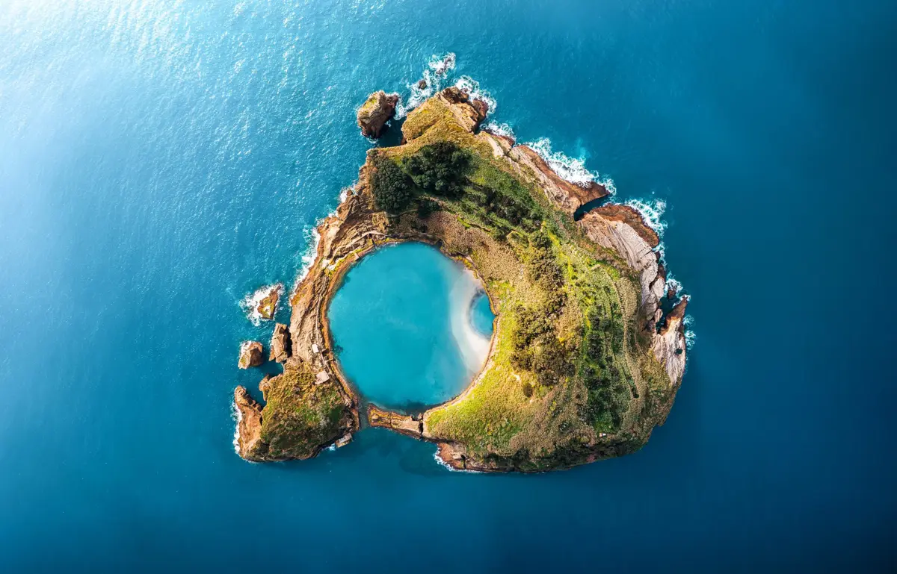
Illot de Vila Franca do Campo
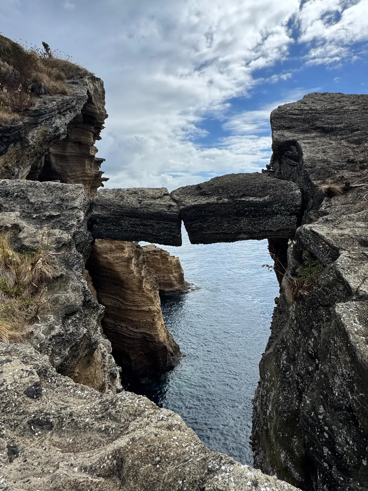
Passarel·la de l'Illot
Cap a migdia agafarem el ferri de tornada cap a Vila Franca do Campo i posarem
rumb cap al poble de Furnas. Per l'anada recorrerem la carretera
del sud, mentre que la tornada la farem pel nord.
Abans d'arribar al poble de Furnas farem una parada per admirar la
Lagoa das Furnas
i visitarem el Mata Jardim José do Canto.
A l'interior d'aquest parc farem la curta caminada
TM16 SMI – Salto do Rosal
(3,6 km; 1h).
TM16 SMI – Salto do Rosal
📏 3,6 km · ⏱ ~1h · ↑↓ 240m ·
Fàcil
📈 Perfil d'elevació (3,6 km · ↑↓ 240m)
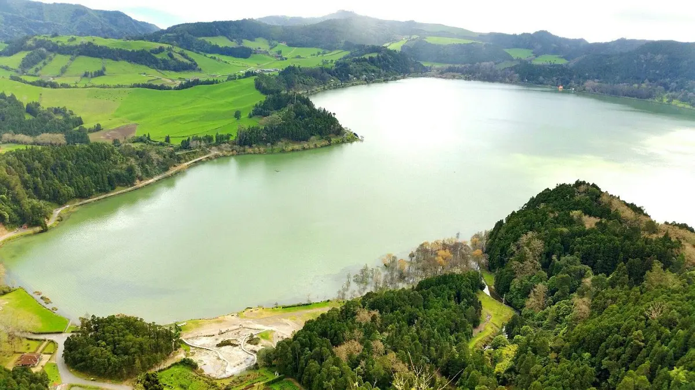
Lagoa das Furnas
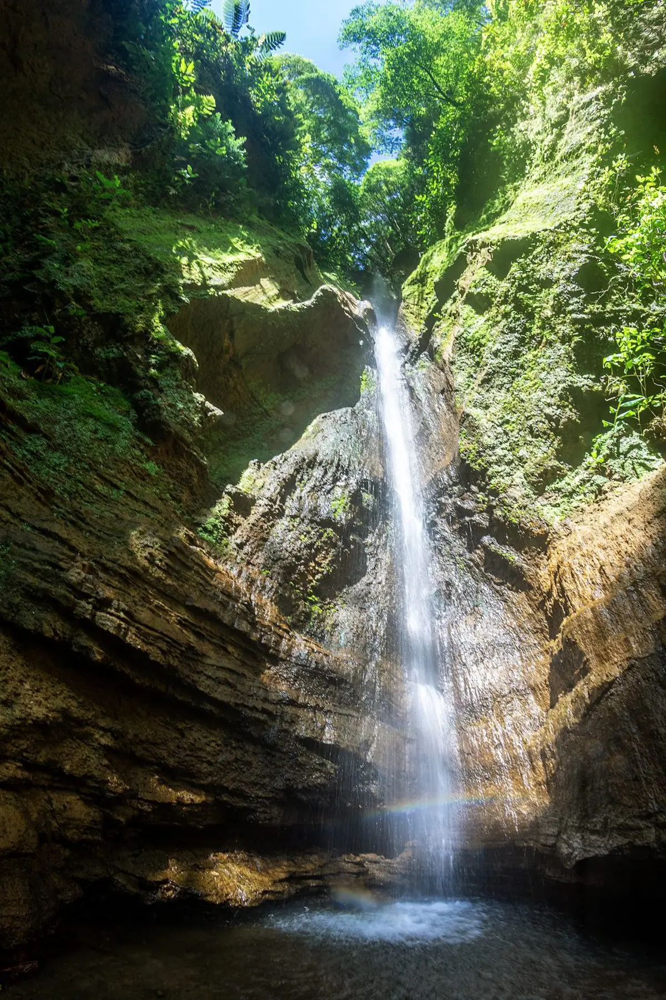
Salto do Rosal – TM16
Després acabarem d'arribar al poble de Furnas i buscarem algun lloc
per fer un dinar ràpid (a l'hora que arribarem ja no podrem provar el típic
cozido de la zona que se serveix només entre 12:30h i 13:00h – ooohhhhhhh 🙀).
Restaurants recomanats a Furnas
Menjar ràpid
Restaurants
Després de dinar visitarem el
Parc Terra Nostra.
Un jardí botànic històric monumental, ideal per caminar entre les col·leccions de
camèlies i banyar-se a la gran piscina termal de color marró/ferrós (l'aigua està a
38 °C constant). Recordeu portar el banyador vell!
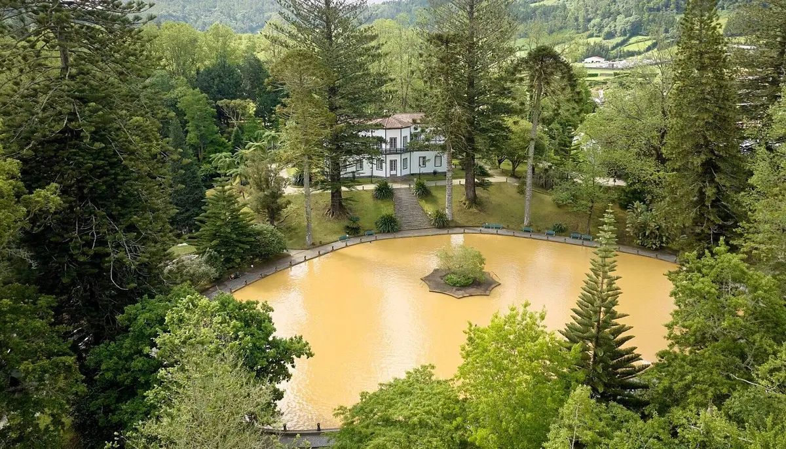
Parc Terra Nostra
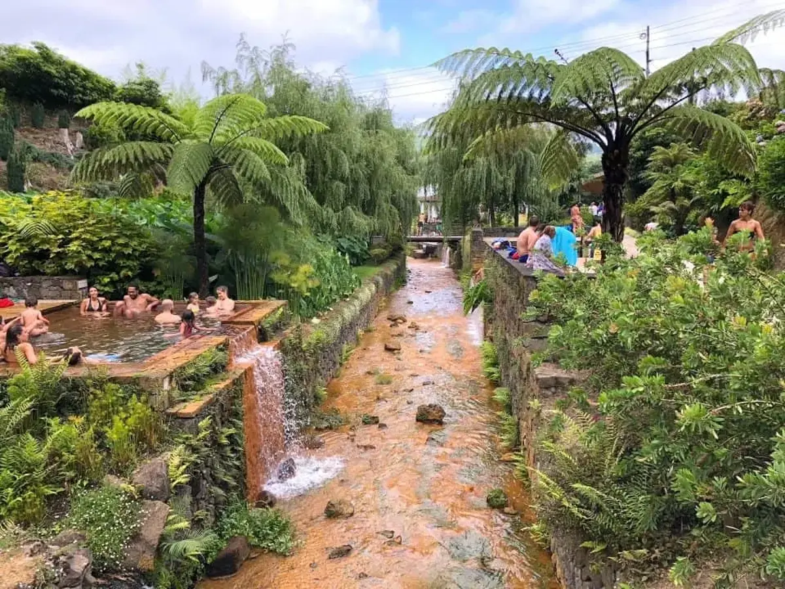
Alternativa: Poça da Dona Beija
Quan ens facin fora (tanca a les 16:30h) podem acabar de donar una
volta pel poble per admirar les
Caldeiras de Furnas
(fumaroles). Es tracta de fer una passejada a peu pel centre del poble on la terra
literalment bull i a on veurem els bolls de fang bullint, les fonts d'aigües minerals
amb diferents gustos i respirarem la clàssica olor de sofre de la vall volcànica.
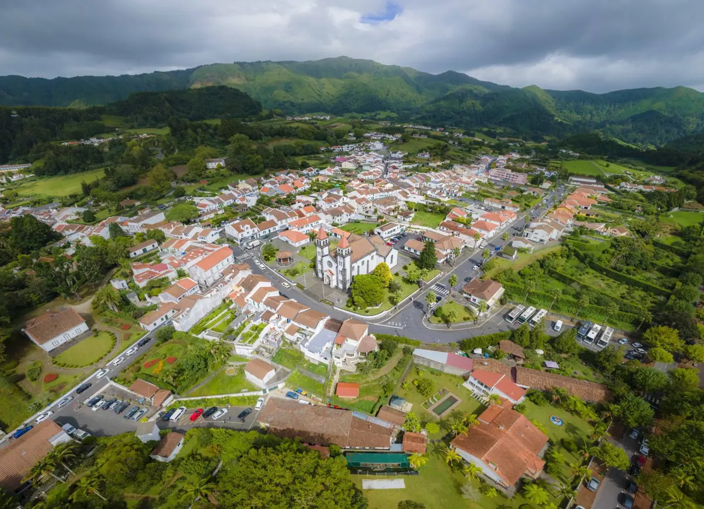
Furnas – centre del poble
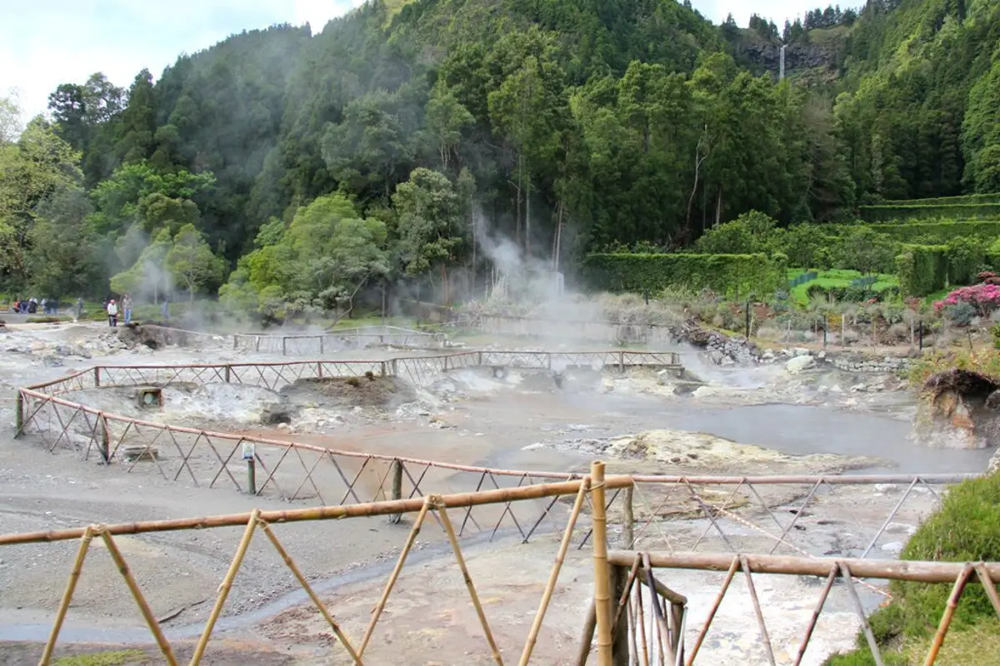
Caldeira das Furnas (fumaroles)
Per acabar deixarem el poble pel nord i aprofitarem la última llum del dia per
visitar dos dels miradors més famosos de la zona. Es tracta del
Miradouro do Salto do Cavalo
i el Miradouro do Pico do Ferro.
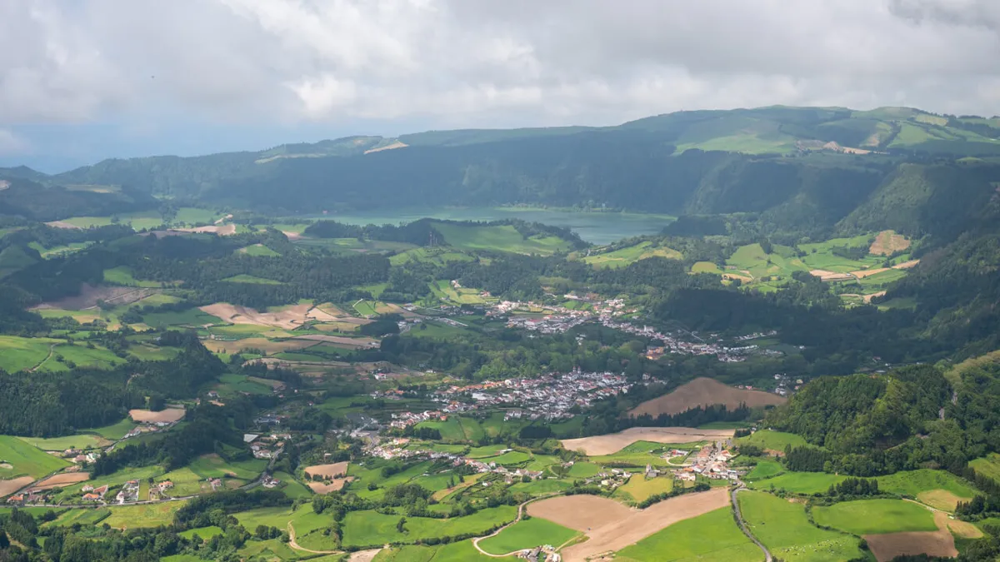
Miradouro do Salto do Cavalo
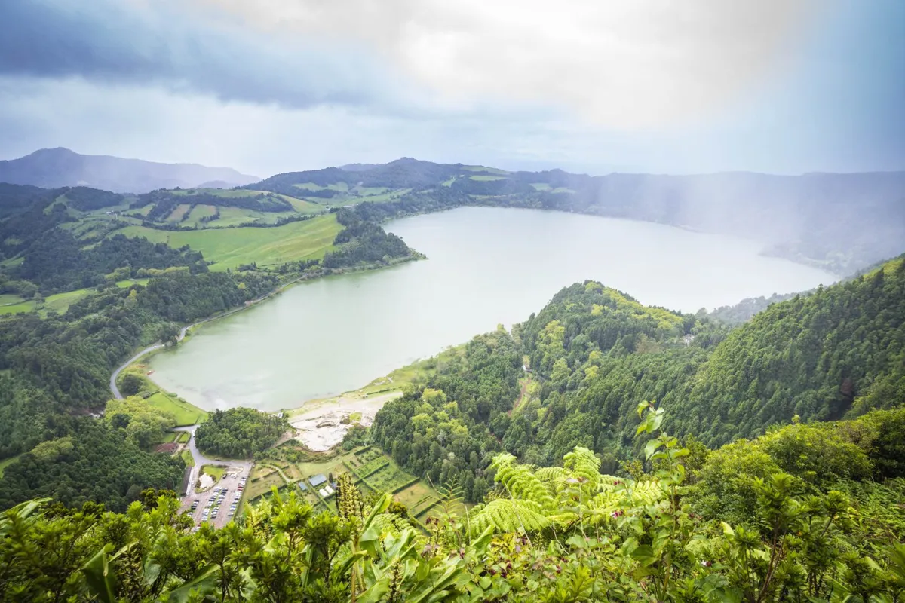
Miradouro do Pico do Ferro
🌿
Opcional: Lagoa do Congro
Caminada de 15 minuts de baixada a través del bosc salvatge de
falgueres fins a arribar a la riba d'una llacuna verda amagada. Si el temps ho
permet, val moltíssim la pena.
Tenint en compte que demà tocarà matinar de valent, potser la millor opció per
sopar avui és arribar-nos a Vila Franca do Campo i comprar unes
pizzes per menjar a l'allotjament.
Mapa de l'itinerari proposat
▶️
~08:45
🏠 Casa Cherimoya — sortida
1
~10:00
⛵ Illot de Vila Franca do Campo ⭐
Ferri des de VFC · Snorkel + platja + passarel·les
2
~12:30
🏞️Lagoa das Furnas⭐
3
~13:00
🥾Mata Jardim + TM16 – Salto do Rosal⭐
3,6 km · ~1h · Bosc i cascata
4
~14:15
🍽️ Furnas — dinar ràpid
El cozido ja no en quedaran... 🙀
5
~15:00
♨️Parc Terra Nostra⭐
Tanca a les 16:30h · Banyador vell obligatori
6
~16:30
🌋Caldeiras de Furnas⭐
Passejada a peu · Fumaroles i fonts d'aigües minerals
Dimarts 28 de juliol · Dia 7 de 12 · São Jorge → Pico
🐉 L'illa del drac: São Jorge
Topo · Fajã dos Cubres · Fajã do Ouvidor · Sete Fontes · Ponta dos Rosais
🕗 Sortida allotjament 5:30h📍 7 parades✈️ Vol PDL–SJZ · ⛴️ Ferri a Pico🚗 3 lloguers de cotxe · 10h a l'illa🚗 32 km SM · 137 km SJ · 15 km PIC🗺️ Veure ruta
Hora aproximada de sortida de l'allotjament: 5:30h
Ens haurem de llevar molt d'hora per anar cap a l'aeroport (32 km; 30 min), retornar
els cotxes de lloguer i agafar un vol curt a les 7:35 que ens portarà
amb menys d'una hora fins a l'illa de São Jorge. Aprofitarem
l'hora d'espera per esmorzar alguna cosa al mateix aeroport.
Retorn dels cotxes a São Miguel
Data i hora retorn28-07-2026 · 6:00h
EmpresaIlha Verde
AdreçaAeroporto João Paulo II, 9504-749 Ponta Delgada
Durada del volCompanyiaNº VolNº Reserva0:55SATASP420XV5ZHM
SÃO JORGE. El primer que farem només
aterrar serà recollir els cotxes de lloguer que ens permetran fer una visita ràpida
a aquesta illa tan salvatge.
En teoria ens han d'estar esperant al propi aeroport a les 9h. Hi haurà un/a senyor/a
amb un cartell amb els nostres noms com a les pel·lícules??? 🥸
🗒️
Nota: demanar al senyor/a del lloguer per retornar el cotxe mitja hora més tard del
que vam dir, és a dir a les 19:30h (així no hem de carretejar
maletes en cap moment).
🕙 Recórrer São Jorge en 10 hores (tindrem aproximadament de 9h a 19h) és un repte intens
però totalment factible si ens concentrem en l'eix central i la costa nord, que és on
es troben els paisatges més colossals de l'illa. La clau és seleccionar molt bé quines
fajãs (les plataformes de lava arran de mar) baixarem a visitar per no perdre
temps en corbes inútils.
⚠️ Consells per a aquestes 10 hores
⚠️
No incloure la Fajã de Santo Cristo:
és la més famosa de l'illa, però no s'hi pot arribar en cotxe (només caminant 2 hores
o en quad). Intentar anar-hi ens faria perdre tot el dia. La veurem des de dalt, des
del mirador de la Fajã dos Cubres.
Dipòsit ple: a l'interior de l'illa i a les
fajãs no hi ha cap benzinera (en teoria ja ens els han d'entregar amb el
dipòsit ple).
Utilitzar el "fre de motor" (marxes curtes): la
baixada a la Fajã dos Cubres, a la d'Ouvidor o a la de Vimes
tenen desnivells molt forts. S'aconsella baixar amb una marxa curta i deixar que el
motor retingui el vehicle per no cremar els frens.
La carena central (per on transcorre gran part de la EN1) sol
estar completament blanca de boira al matí. És millor visitar primer
llocs costaners i deixar per la tarda la part alta de l'illa.
🐉 Itinerari de 10 hores a São Jorge
Només sortir de l'aeroport posarem rumb directe, sense parades, fins arribar a
Topo (40 km; 45 min),
a l'extrem més oriental de l'illa. Aquí visitarem el seu port històric, el far i
l'illot. Obriu bé els ulls perquè diuen que en aquest
illot hi pasturen vaques 🐄.
Només està a 100 metres de la costa, però com hi hauran arribat? 🤔 Nedant???
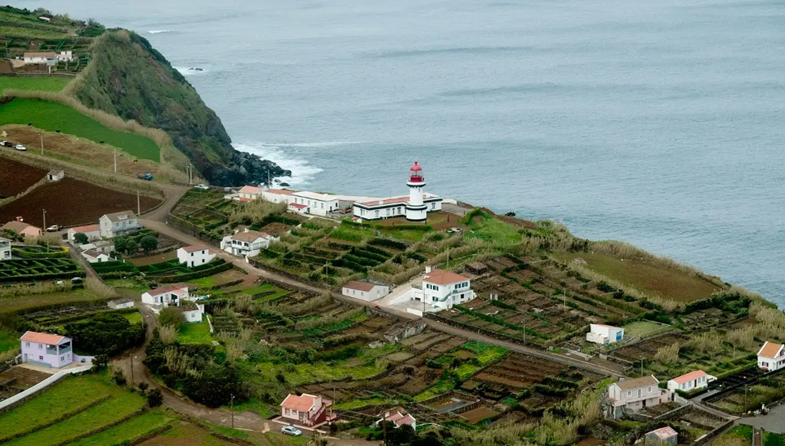
Farol do Topo
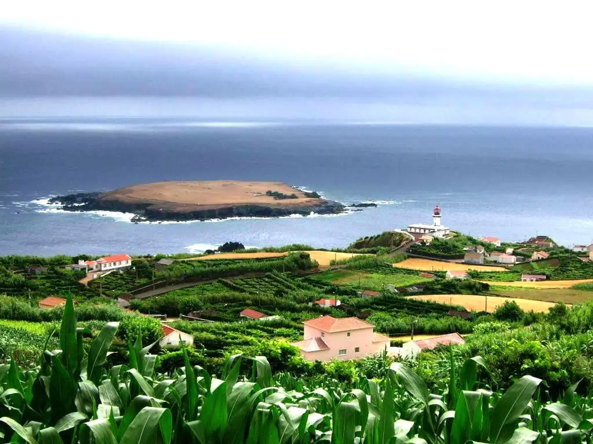
Ilhéu do Topo
Abans de deixar Topo, farem una parada ràpida a la Pastelaria Dôcilha
per comprar una caixa de Espécies Cx Dôcilha (galetes tradicionals farcides a
base de pa ratllat, canyella, clau d'olor, nou moscada i pebre negre. Tenen un gust
especiat, intens i dolç molt característic que no es troba enlloc més del món).
Després d'aquesta visita ràpida a l'extrem est, desfarem part del camí fet de forma
més pausada, aturant-nos a alguns dels miradors que trobarem com el
Miradouro do Topo, el de Canada do Pessegueiro, el de
Pedras Brancas i el de
Serra do Topo
(de Topo a aquest darrer mirador hi ha uns 20 km).
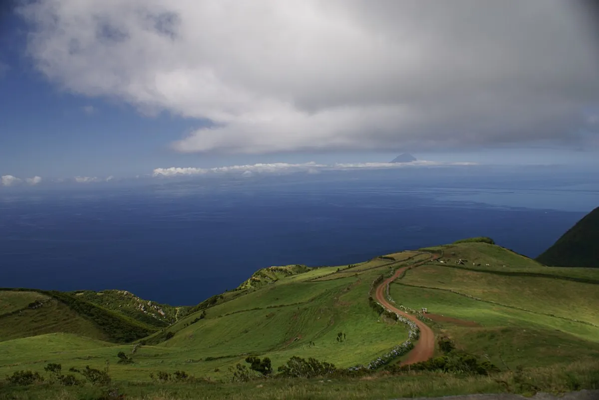
Mirador Canada do Pessegueiro
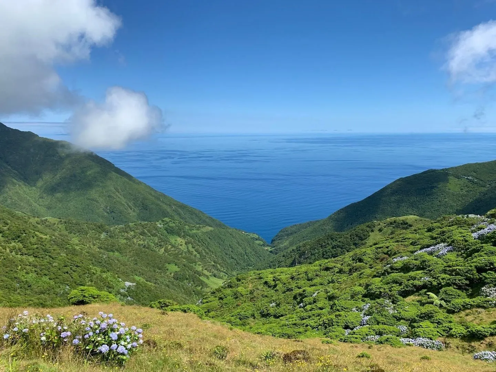
Mirador Serra do Topo
Després seguirem per aquesta mateixa carretera (ER-2) fins al llogarret de Silveira
(7,5 km; 10 min) a on agafarem la carretera ER 1-2 fins arribar al
mirador de la Fajã dos Cubres
(8 km; 12 min). Des d'aquest mirador hauríem de poder contemplar la famosa
Fajã do Santo Cristo,
per després acabar baixant a visitar la
Fajã dos Cubres.
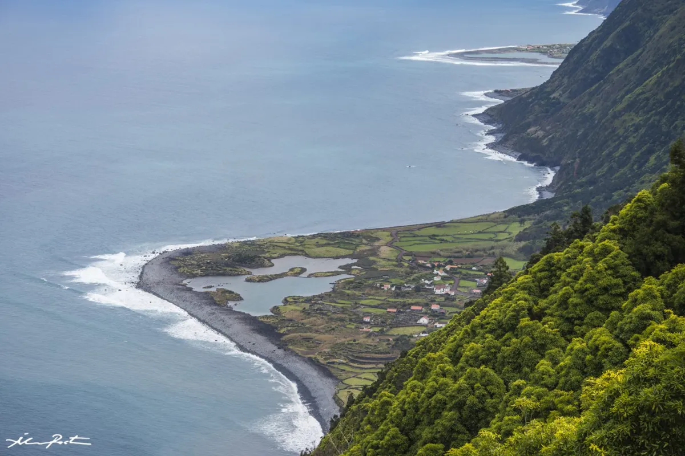
Mirador Fajã dos Cubres
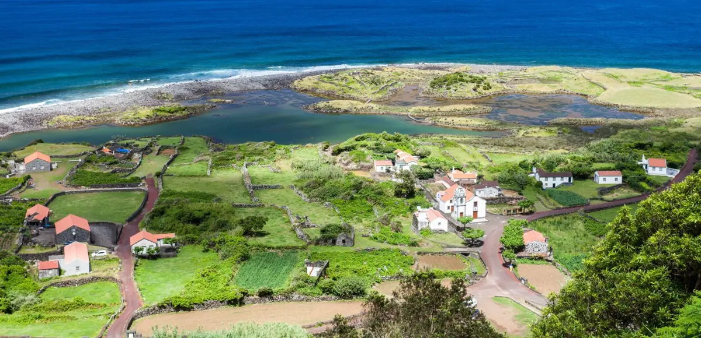
Fajã dos Cubres
Segurament ja serà hora de dinar, i intentarem fer-ho a l'únic restaurant de la zona,
a la Taberna do Paço (més endavant, a la Fajã do Ouvidor no trobarem
cap lloc obert ja que l'únic restaurant que hi ha precisament tanca els dimarts).
Amb la panxa plena posarem rumb a l'oest per la pintoresca ER 1-2 fins a la
Fajã do Ouvidor
on farem una passejada ràpida i ens arribarem a la
Poça do Simão Dias,
la piscina natural més espectacular de les Açores, encaixonada entre columnes
geomètriques de basalt negre, on si fa bon temps, ens hi podrem banyar
(imprescindible portar escarpins).
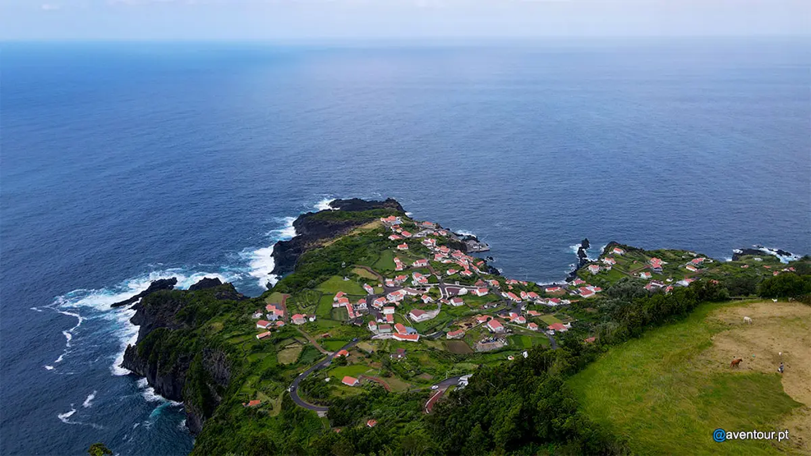
Fajã do Ouvidor
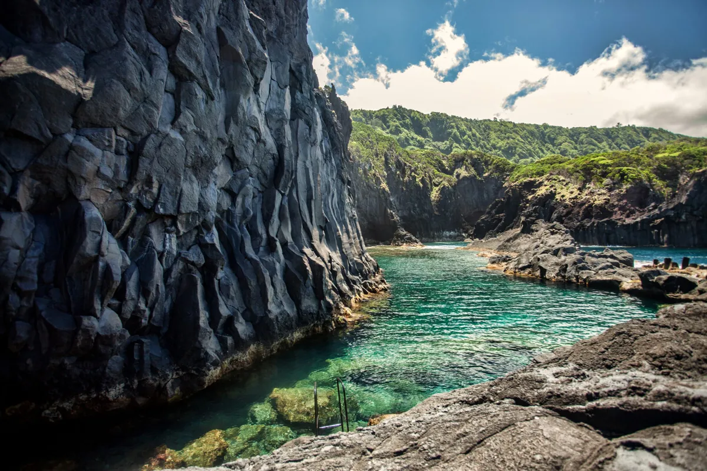
Poça do Simão Dias
A continuació ens dirigirem cap al
Parque Florestal de Sete Fontes
(24 km; 30 min). Un parc de boscos frondosos ple de basses, camins envoltats de
falgueres gegants i tancats amb canaris salvatges i cérvols. Ideal per fer un passeig
tranquil a la fresca de la tarda. També ens arribarem al proper i espectacular
Miradouro Ferrã Afonso
on, si el dia està clar, es pot observar el seguit de turons de la part alta de
l'illa que recorden la silueta d'un drac, i el Miradouro do Pico da Velha,
un dels punts més elevats de la zona que ofereix una vista de 360 graus.
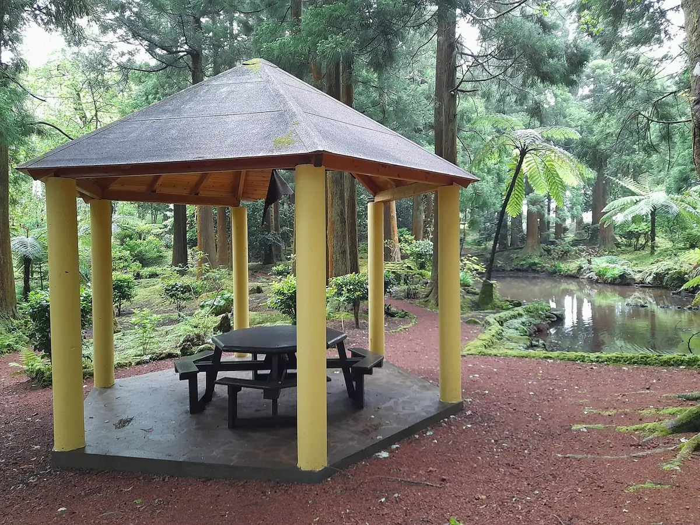
Parque Florestal Sete Fontes
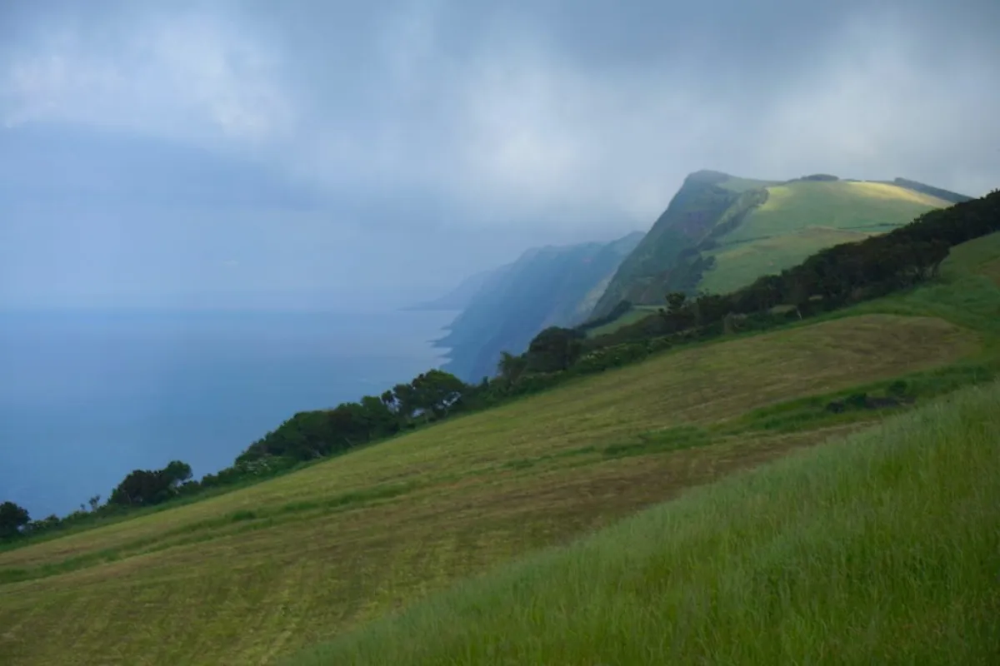
Mirador Ferrã Afonso
Després seguirem 5 km més cap a l'oest per una pista de terra fins a arribar a
Vigia da Baleia,
per contemplar els penya-segats salvatges i verticals de 200 metres d'alçada tallats
a ganivet sobre l'Atlàntic, amb les illes de Faial i Pico retallades a l'horitzó.
⚠️
Avís important de seguretat
Està totalment desaconsellat intentar
arribar a la zona del far abandonat amb un cotxe normal ja que la pista de terra
sovint presenta aragalls, pedres soltes i sots profunds causats per la pluja i el
vent constant de la zona. A més a més, si fem a peu els 400 metres que queden de
camí fins a la tanca del far abandonat, sota cap concepte s'ha de passar de
les tanques ni apropar-se a la vora de la terra ja que tota la línia de la
costa al voltant del far està molt erosionada i pateix esllavissades constants
(motiu pel qual es va abandonar el complex) i el terreny podria cedir.
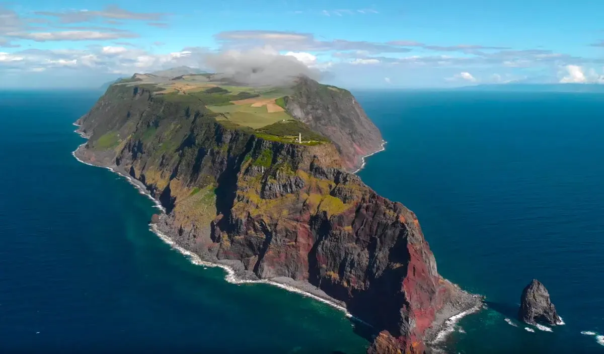
Ponta dos Rosais
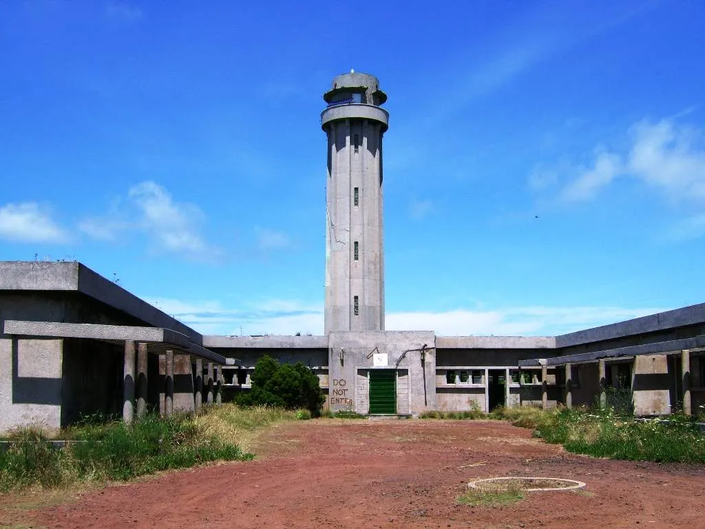
Farol dos Rosais (abandonat)
Per anar acabant la ruta, ens dirigirem cap a
Velas, la capital de
l'illa. Abans de tornar els cotxes a les 19:30h, admirarem les vistes des dels miradors
de Canavial,
Entre Morros i
Morro das Velas.
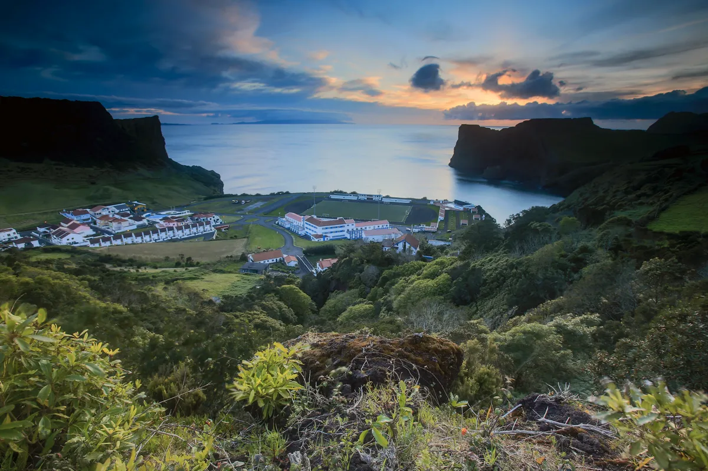
Mirador do Canavial
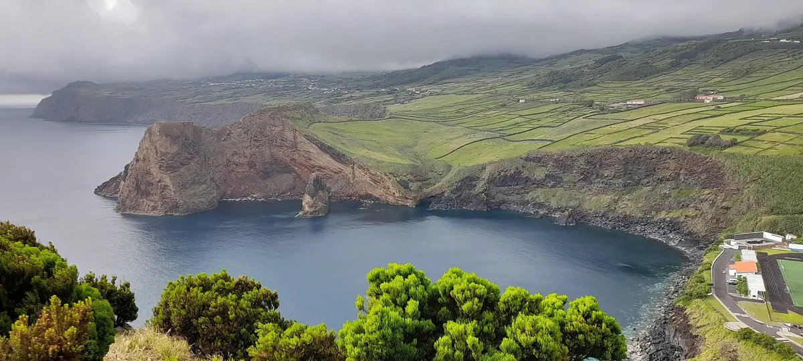
Morro das Velas
Després ens arribarem fins al bonic i curiós
Arco Natural de Velas
i aprofitarem per menjar alguna cosa ràpida per la zona (encara que sigui d'hora,
segurament també haurem dinat d'hora i si esperem a arribar a Pico per sopar se'ns
pot fer massa tard).
Restaurants de menjar ràpid a Velas
Després de sopar (sobre les 19:30h), retornarem els cotxes de lloguer i esperarem
el ferri que a les 20:15h (cal ser-hi mitja hora abans) ens ha de portar a la veïna
illa de Pico, a on es preveu que arribarem al port de
Cais do Pico al cap d'una hora.
Avís important — Travessia per mar obert
No tenim ni idea de com de tranquil·la o de moguda
serà aquesta travessia d'una hora per mar obert. Per aquells que ho vulguin, hi haurà
Biodramina que cal prendre una hora abans de la sortida, és a dir,
sobre les 19:15h.
Ferri Velas – Cais do Pico
OrigenHora SortidaDestíHora ArribadaVelas20:15São Roque do Pico21:15
DuradaCompanyiaNom VaixellNº Reserva1:00Atlantico LineCruzeiro do Canal96609
Mapa de l'itinerari proposat
▶️
9:00
🚗 Cotxes de lloguer a l'aeroport
1
9:45–10:30
🔭Topo
Port històric, far i illot
2
10:45–11:45
🔭 Miradors de la ER-2
Canada do Pessegueiro · Pedras Brancas · Serra do Topo
▶️ Aeroport SJZ · Parades 1–7 en ordre · 🏁 Port de Velas
Mapa de situació de tots els llocs d'interès
Ja som a Pico, la tercera illa de la nostra aventura. Només
desembarcar ens dirigirem a buscar els cotxes de lloguer (21:30h) per després posar
rumb directe al nostre (aquesta vegada sospito que no serà gaire fantàstic 😓) allotjament situat a
la localitat de Prainha, a on hi dormirem els propers tres dies
(15 km; 20 min).
🗒️
Nota: demanar al senyor/a del lloguer per retornar el cotxe 2 hores més tard del que
vam dir, és a dir a les 14:30h (així l'últim dia no haurem de carretejar
maletes en cap moment).
Després d'un dia tan intens, arribarem cansats a Prainha. A dormir d'hora, que demà
toca conèixer la muntanya més alta de Portugal!
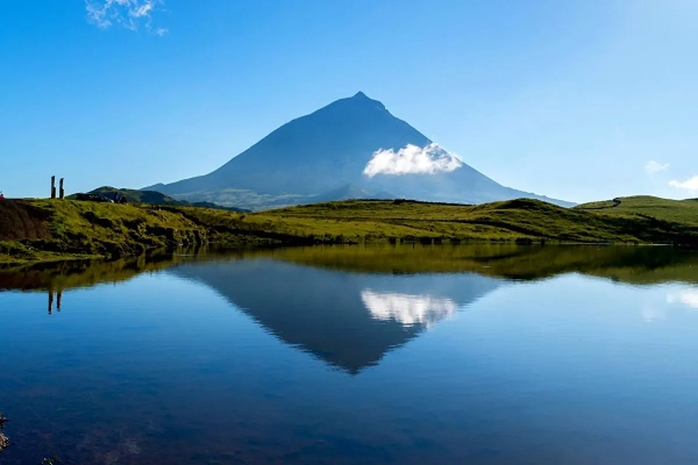
Dimecres 29 de juliol · Dia 8 de 12 · Pico
🌋 Centre i oest de Pico
Planalto da Achada · Madalena · Vinhas da Criação Velha · Lagoa do Capitão
🕗 Sortida allotjament 8:30h📍 7 parades🥾 PR05 Vinhas da Criação Velha🏞️ Llacunes del Planalto🚗 ~114 km🗺️ Veure ruta
🔀
Informació important
La ruta d'avui transcorre en gran part per l'altiplà central de l'illa. Aquesta zona
és molt sensible al clima i sovint hi ha boira. Per aquest motiu, tot i que la boira
sol ser més habitual a la tarda, si quan ens llevem veiem que la part central està
coberta de boira, faríem el recorregut en sentit contrari.
🥾
Opcions de senderisme a la zona
En aquesta zona hi ha diverses opcions de senderisme. En l'itinerari proposat s'ha
considerat fer el famós PRC05 PIC - Vinhas da Criação Velha, que recorre les
vinyes de la part occidental amb els seus característics currais.
Difícilment hi haurà temps i ganes de fer-ne cap altra, ja que mentre recorrem el
centre de l'illa, segur que a més d'una 🙋♀️ li entraran ganes de pujar fins al cap
d'amunt d'algun dels múltiples cons volcànics que hi ha i observar les llacunes del
seu interior.
Ascensió a la muntanya de Pico
Cim de Pico + Piquinho (2.351m)
📏 8,0 km⏱ 7h–8h↑ 1.150mExtrema
Ruta que s'inicia a la Casa da Montanha, a uns 1.200m
d'altitud, i recorre en constant ascens la carena del volcà fins arribar
primer al cim de Pico (a uns 2.200m) i després al Piquinho
(2.351m), el punt més alt de Portugal. Des de dalt de tot es pot gaudir
d'unes espectaculars vistes de 360 graus sobre l'illa de Pico i la resta
d'illes del grup central.
🎫 Requereix reserva prèvia i s'aconsella fer-la amb un guia.
PRC08 PIC
Ladeira dos Moinhos
📏 3,3 km⏱ 1hCircuit blau · Fàcil
Inici junt a l'església Matriz de São Roque. La ruta puja
primer per una carretera asfaltada per després endinsar-se en antics camins
de terra que ofereixen vistes panoràmiques al mar i al patrimoni històric de
la zona, incloent-hi diversos molins.
Inici a les piscines naturals de Furnas (Santo António).
Ruta costera que ofereix vistes increïbles de l'oceà i el paisatge local,
ideal si es vol fugir de les zones més turístiques de l'illa.
De compres
En algun moment del dia, quan estiguem per la zona de Madalena, s'ha de trobar una
estona per anar a comprar esmorzar pels següents dos dies.
Hora aproximada de sortida de l'allotjament: 8:30h
El primer que haurem de buscar és un lloc a on esmorzar perquè a l'allotjament no
tindrem encara res. A la zona no hi abunden bars i cafeteries precisament, així que
la millor opció serà comprar alguna cosa a la pastisseria Manjar dos
Sabores o bé a la Padaria Prainha.
Si fem això, comprar l'esmorzar, podem aprofitar la proximitat del
Parque Florestal da Prainha
(menys de 5 km), per esmorzar-hi i fer una breu passejada per aquest preciós entorn.
Seguidament ens endinsarem cap a l'interior de l'illa per recórrer el
Planalto da Achada
i visitar alguns dels nombrosos llacs que hi ha a l'interior dels cràters.
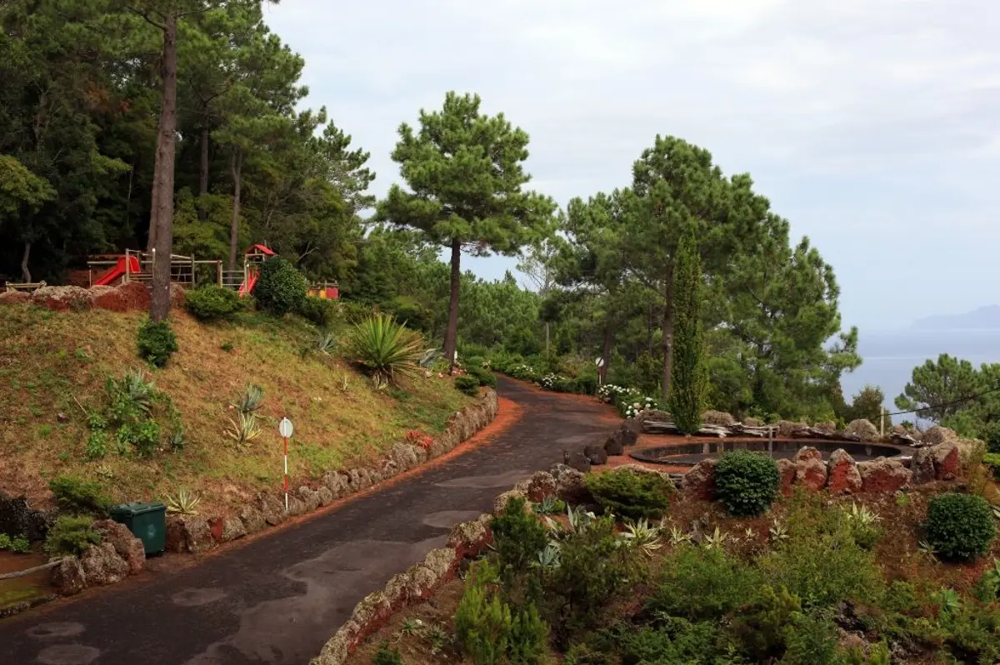
Parque Florestal da Prainha
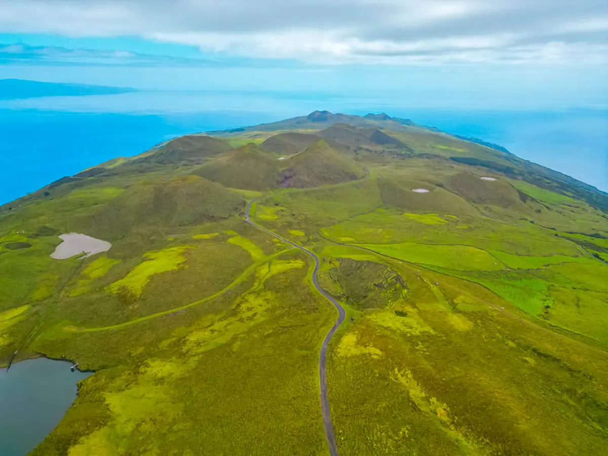
Planalto da Achada
Mentre ens dirigim al sud per l'Estrada de Meia Encosta (9,3 km)
tindrem l'oportunitat de veure la impressionant Bomba da Prainha Rocha
(una enorme roca d'acreció que es va desprendre de la part terminal d'un flux de lava
i que, probablement a causa del fort pendent d'aquesta zona, va rodar pel vessant fins
a la seva ubicació actual, on es va anar refredant durant milers d'anys) i fer una
breu parada al Miradouro de Meia Encosta.
Al moment en què arribem a l'encreuament de la carretera actual amb l'Estrada
das Lagoas (8 km), decidirem si tenim ganes de fer una breu, però ascendent,
caminada per visitar la Lagoa do Peixinho
o la Lagoa da Rosada. Més
endavant, seguint aquesta mateixa carretera, trobarem altres llacunes com les do
Caveiro, Olho Gordo,
do Cabeço dos Grotões o
do Caiado, sent aquesta darrera
la més interessant de visitar (o no...).
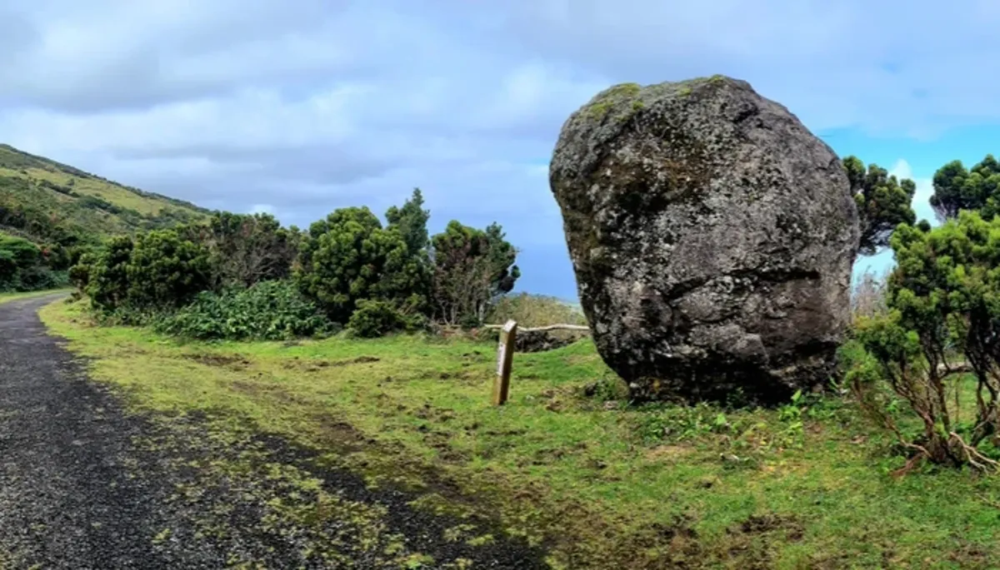
Bomba da Prainha Rocha
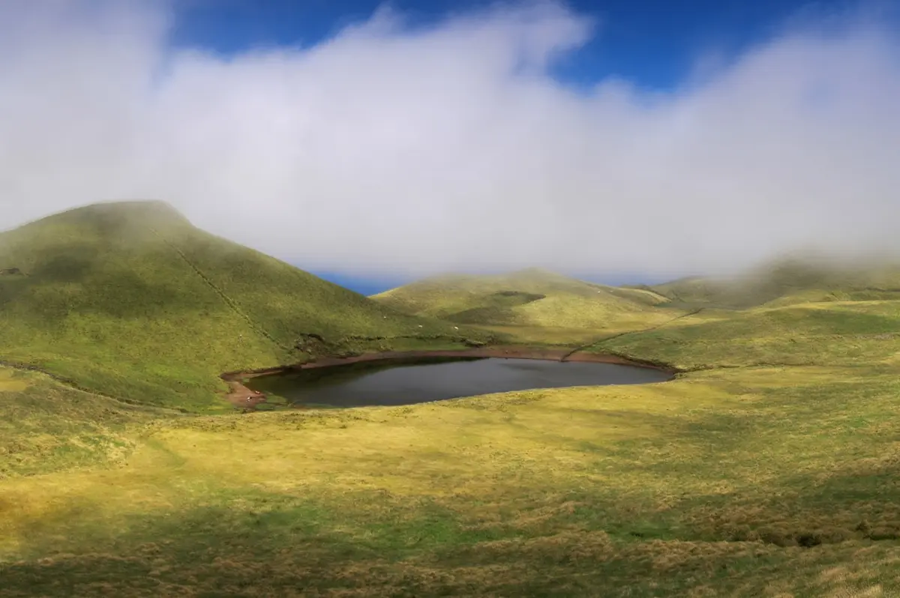
Lagoa do Peixinho
En aquest punt, la carretera canvia de nom i passa a dir-se Estrada
Transversal (5 km), que seguirem fins a la
carretera EN2, que agafarem en sentit nord fins al
Miradouro do Corre Água.
A continuació tirarem una mica enrere per la EN2 fins a trobar-nos amb l'EN3 o
Estrada longitudinal (22,4 km) que recorrerem en direcció oest.
Aquesta carretera és una de les més boniques de les Açores i també és coneguda perquè
hi ha la recta més llarga (9 km) de tot l'arxipèlag. Seguint-la passarem per la base
de la muntanya/volcà de Pico que, amb tota la seva immensitat i
majestuositat, ens quedarà a mà esquerra.
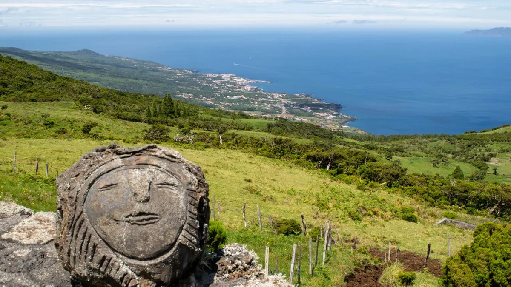
Miradouro do Corre Água
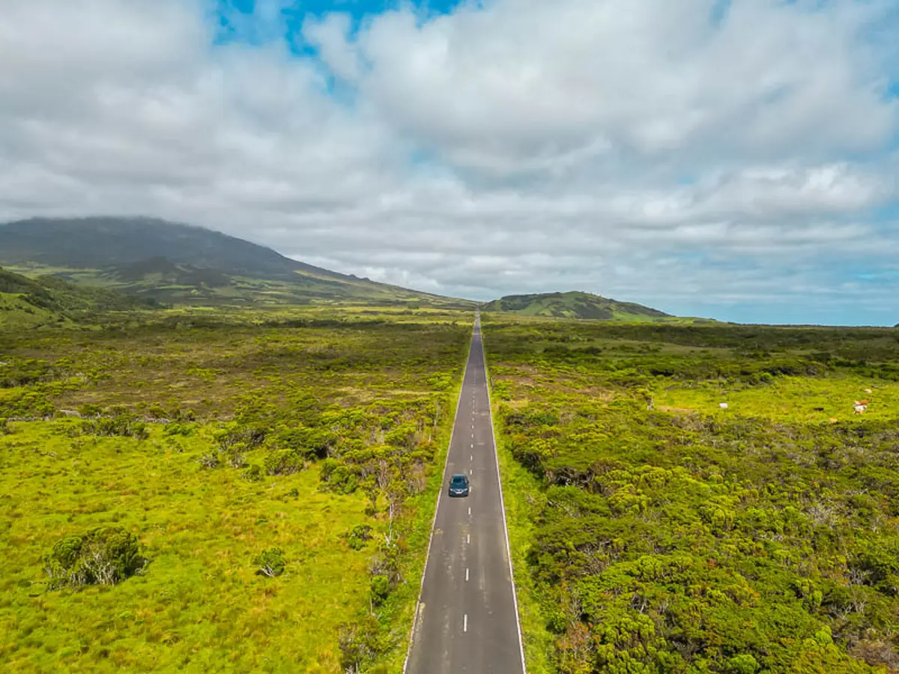
Estrada longitudinal (EN3)
Si anéssim bé de temps, cosa poc probable la veritat 🤯, la següent parada serà,
encara a l'Estrada longitudinal, la
Furna do Frei Matias.
Es tracta d'una cavitat de lliure accés d'aproximadament 600 metres de longitud, encara
que només els primers 100 es poden visitar sense equipament tècnic d'espeleologia. Es
poden veure diverses estalactites i estalagmites al llarg del seu recorregut i té un
premi final, que segurament no tots podrem gaudir a causa de l'estretor de l'esquerda
que hi dona accés, amb una gran formació de roques altíssimes.
🔦
Cal portar llanterna, especialment pel tram final on la del mòbil es pot quedar curta.
📆
Si no anem bé de temps, mirarem de visitar-la de tornada.
Un cop a Madalena,
capital de l'illa, farem una breu passejada pel seu casc antic i buscarem un lloc per
dinar. L'oferta gastronòmica és enorme i de gran qualitat; aquestes són algunes de les
propostes més interessants.
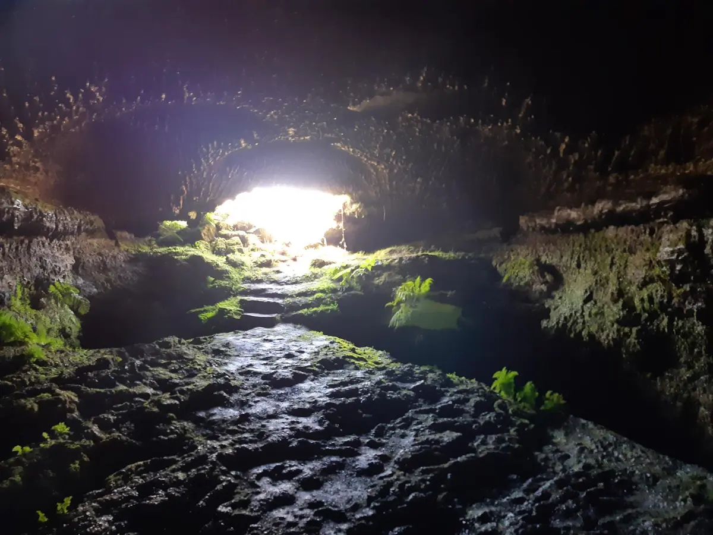
Furna do Frei Matias
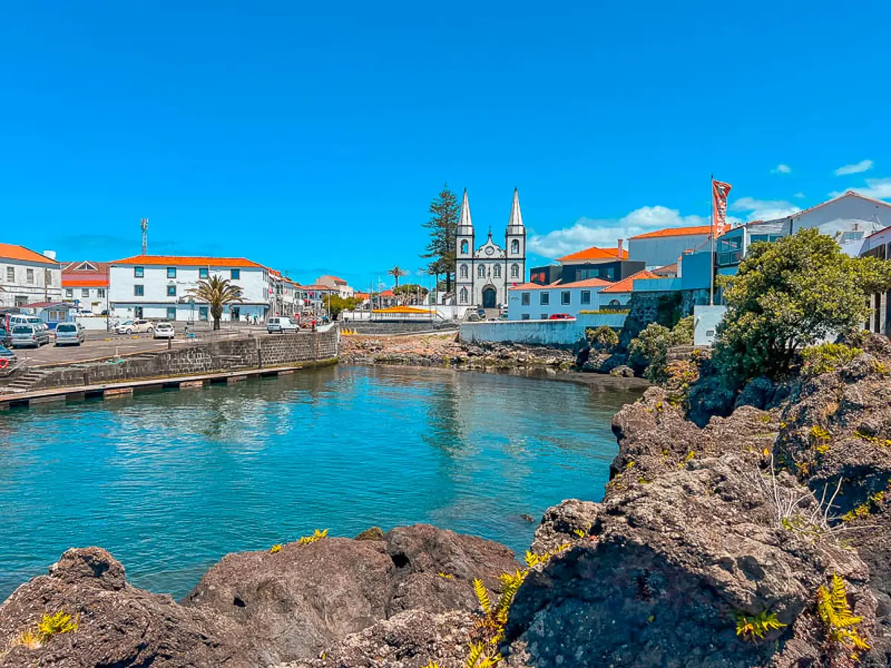
Madalena
Restaurants a Madalena
Després de dinar, serà el moment de fer la ruta de senderisme
PR05 PIC - Vinhas da Criação
Velha. Aquesta ruta travessa camps de lava i zones de vinya protegides
amb parets de pedra volcànica negra (currais), un paisatge que ha estat
declarat patrimoni de la humanitat per la UNESCO, i passa pel famós
Moinho do Frade.
PR05 PIC · Vinhas da Criação Velha
📏 6,9 km · ⏱ ~1h55 · ↑↓ 90m ·
Fàcil
Aquesta ruta són uns 7 km només d'anada, per la qual cosa haurà arribat el moment que
molts segur que trobàveu a faltar: ens dividirem en 2 grups!!! 🎉🍾🥳
👥 Grup 1
Sortida: Amb cotxe fins a Areia Larga (davant del restaurant O Ancoradouro, 1 km del centre de Madalena)
Sentit: PR05 en sentit Sud
👥 Grup 2
Sortida: Amb cotxe fins a Calhau (6,3 km al sud de Madalena)
Sentit: PR05 en sentit Nord
🎒
En ambdós casos és important que a les motxilles amb què farem la ruta hi portem el
banyador, els escarpins i una tovallola.
El punt de retrobament 😰 (temporal 🎊) serà les
piscines naturals de Criação
Velha, que es troben a aproximadament 4 km d'Areia Larga i a 3 km de
Calhau. Aquí intercanviarem les claus 🔑 dels cotxes (🚨 molt important!!!), i
si el dia acompanya podrem fer un bany ràpid a aquestes magnífiques piscines (en
teoria, hi ha vestidors a on ens podrem posar el banyador).
Després cada grup seguirà el seu camí fins als cotxes i ens tornarem a trobar
(ohhhhh 😓) a Areia Larga per seguir col·leccionant records junts 🤗.
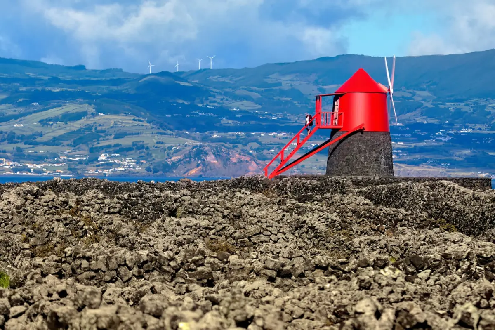
Moinho do Frade
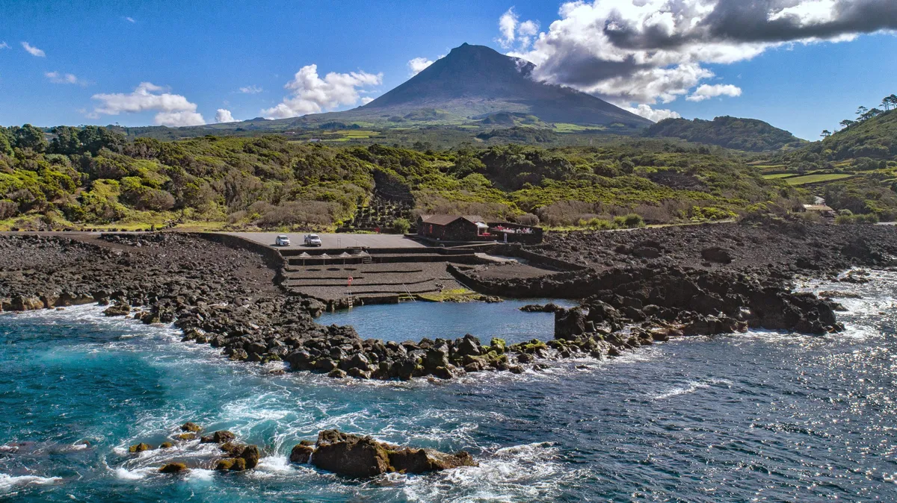
Piscina de Criação Velha
Si al matí no hem tingut temps de visitar la
Furna do Frei Matias,
serà la nostra següent parada.
Seguidament enfilarem de nou la EN3 cap a l'est fins a la
Lagoa do Capitão.
Aquesta llacuna d'obligada visita és la més gran de l'illa i està rodejada per un
paisatge d'un verd exuberant, amb la muntanya de Pico com a teló de fons. A més a més,
a causa de la seva altitud (826 metres), ofereix una vista privilegiada de l'illa de
Pico i també de la veïna illa de São Jorge.
Esperem no trobar boira i poder fer la foto més buscada de tota l'illa: la muntanya
de Pico reflectida a l'aigua de la llacuna. 📷
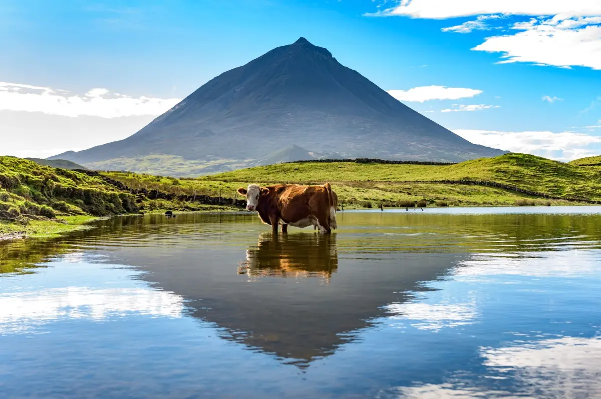
Lagoa do Capitão
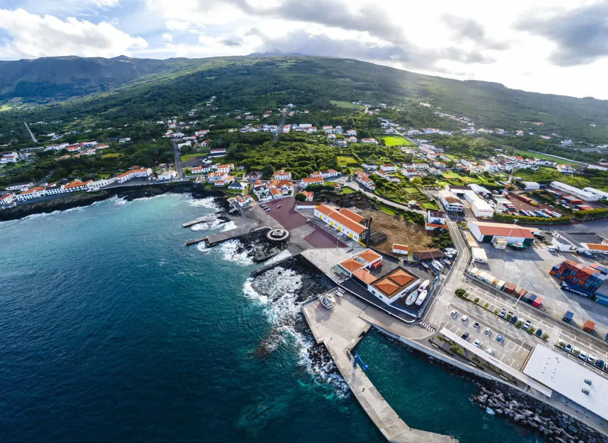
São Roque do Pico
Per anar acabant el dia ens dirigirem a
São Roque do Pico
per fer un passeig per la vora del mar i sopar. Aquests són alguns dels restaurants
recomanats.
Si quan ens llevem veiem que la part central de l'illa està coberta de boira, farem el
recorregut en sentit invers, deixant els miradors i carreteres de l'altiplà per a la
tarda.
Informació important
Aquest matí tenim reservada una excursió amb llanxa a Lajes do Pico d'una durada
aproximada de 3h per anar a veure cetacis. Per als qui siguin propensos al mareig, ja
saben que hi ha Biodramina i que cal prendre-la una hora abans de l'inici, sobre
les 8:00h.
🥾
Opcions de senderisme a la zona
Com el dia anterior, avui també hi ha vàries opcions de senderisme al llarg de la
ruta. En aquest cas però, no se n'inclou cap a l'itinerari proposat ja que no es
preveu disposar de gaire temps i tampoc tenen gaire res d'especial. En tot cas, ja
veurem el mateix dia si n'acabem fent alguna o no (la que a priori sembla més
atractiva és la PR07 PIC).
PR07 PIC
Caminho das Voltas
📏 6,2 km⏱ 2hCircuit verd · Fàcil
Ruta lineal que descendeix des del mirador de Terra Alta fins
al centre de Santo Amaro. El camí transcorre majoritàriament
per un bosc frondós, on es poden observar antics tancats de vinyes i petits
ponts de pedra.
Sender circular de dificultat fàcil a moderada que s'inicia al poble de
Prainha. El recorregut combina zones agrícoles tradicionals
amb un tram de costa basàltica que passa per piscines naturals i una petita
platja de sorra.
Aquesta ruta lineal recorre l'extrem oriental de l'illa, passant per la
històrica capella de Nossa Senhora de Cima da Rocha. Avança
vora el mar sobre roques basàltiques i vinyes fins a arribar al far de
Manhenha.
Un itinerari circular per la costa sud molt lligat a la tradició de la caça
de balenes de la zona. El camí passa pel port de Feteira i
les seves piscines naturals abans de pujar cap a zones de vegetació mixta amb
vistes panoràmiques del poble.
Hora aproximada de sortida de l'allotjament: 7:45h
Avui ens haurem de llevar d'hora, esmorzar i abans de les 8h posar rumb a
Lajes do Pico
(27 km; 35 min). Allí ens espera l'equip de Espaço Talassa que a les
9h ens ha de portar a mar obert a la cerca i captura de cetacis 🐬. A veure si amb una
mica de sort podem veure dofins juganers saltant i alguna que no altre balena sortint
a respirar.
Cal ser-hi una estona abans, sobre les 8:30h ja que primer ens han de donar la xapa
(i a sobre en anglès!) sobre les mesures de seguretat a bord i proporcionar-nos
l'armilla salvavides per si algun despistat cau al mar almenys que pugui flotar (i
esperem, que si és el cas, no se l'empassi cap balena famolenca!). 🕣
No, no ens hi podem banyar
Per si algú té la mala idea: primer, perquè en el cas de les balenes se'ns podrien
menjar i després expulsar-nos a tota velocitat per l'espiracle. I segon, perquè no
està permès! Són animals salvatges i no se'ls ha de molestar ni estressar. 😟
✍️ Nota de l'editor
Hi ha empreses que ofereixen aquesta activitat, bany amb dofins en diuen, però
realment és una enganyifa per a turistes que costa un ull de la cara 🤑 i es duu a
terme sota una estricta normativa per protegir els dofins: l'embarcació ha de
respectar una certa distància, un cop estàs a l'aigua tu no t'hi pots acostar (en tot
cas han de ser ells que s'acostin a tu) i no hi pots interactuar de cap manera.
Cap a les 12h tornarem a port, i si no hi ha cap cas greu de mareig 🥴, farem una
breu passejada pel poble tot buscant un lloc per dinar (pot semblar d'hora, però
també ens haurem llevat i esmorzat molt d'hora). Aquí alguns restaurants que val la
pena tenir en compte.
Restaurants a Lajes do Pico
Havent dinat ens dirigirem cap a l'est de l'illa tot resseguint la costa sud per la
carretera ER1. Abans d'arribar-hi farem parades breus als miradors
Vigia da Queimada
i do Arrife.
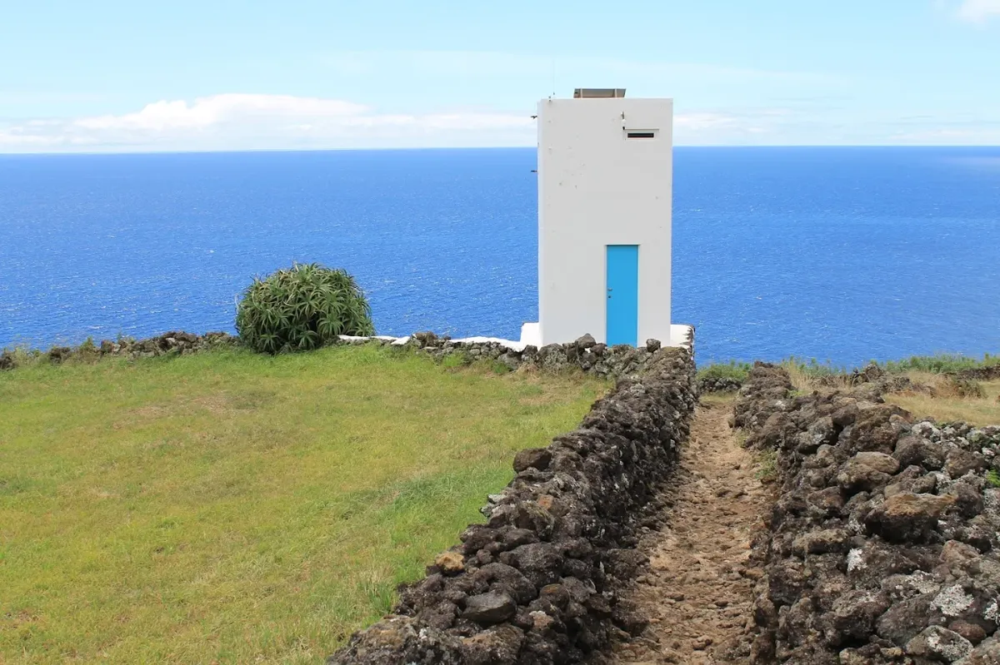
Mirador Vigia da Queimada
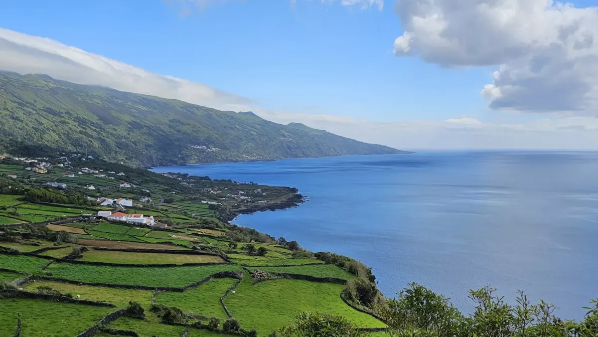
Mirador do Arrife
Quan siguem a l'alçada de Calheta
de Nesquim (a uns 19 km i 30 minuts de Lajes do Pico), tenim l'opció de
desviar-nos cap a l'interior d'aquest poble que té com a gran atractiu la
Poça das Mujas,
una fantàstica piscina natural on ens hi podrem remullar una bona estona (sempre que
el mar estigui en calma).
Després seguirem per la costa sud fins al poble de Manhenha (6 km;
15 min) a on ens arribarem fins al
Farol da Ponta da Ilha
i el Miradouro Ponta da Ilha.
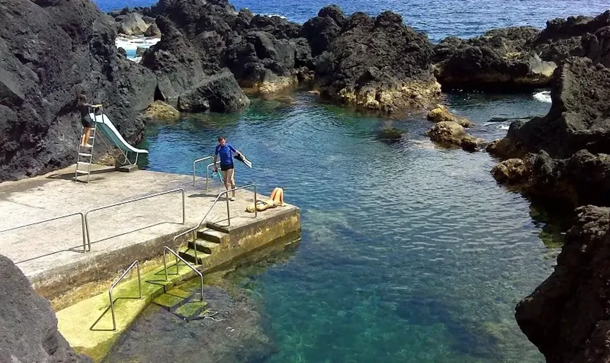
Poça das Mujas
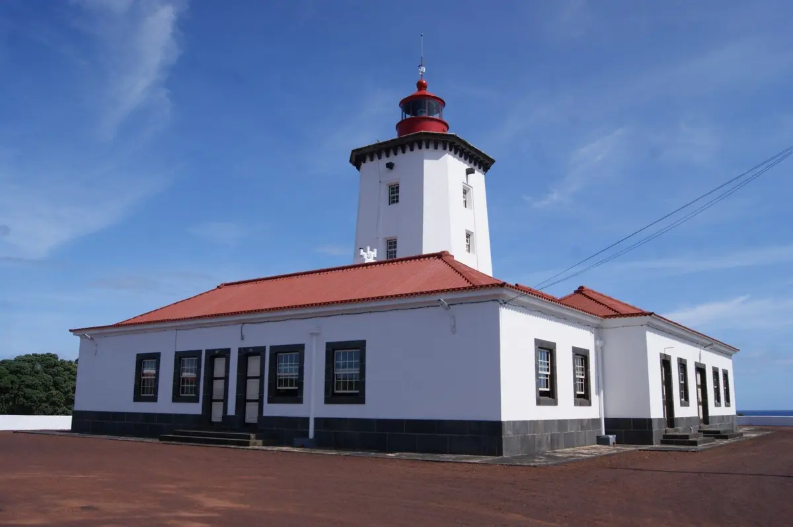
Farol da Ponta da Ilha
Tornarem als cotxes per tornar a buscar la ER1 que resseguirem en sentit nord-oest
direcció a Ribeirinha, passant pel Parque Florestal Matos
Souto (possible parada ràpida) i Piedade (si volem podem
fer una mica de volta per anar més a prop de la costa, però en aquest tram és que
realment no hi ha res més destacat).
Ja a la zona del nord-est, trobarem, per aquest ordre, els miradors de
Ribeirinha,
Alto dos Cedros,
Terra Alta i
Chafariz de Santo Amaro.
D'aquests, sense dubte, el més rellevant i imprescindible és el de
Terra Alta, un
mirador que es troba suspès en un penya-segat a 415 metres d'altura, i que ofereix una
panoràmica espectacular sobre l'oceà Atlàntic i l'illa de São Jorge.
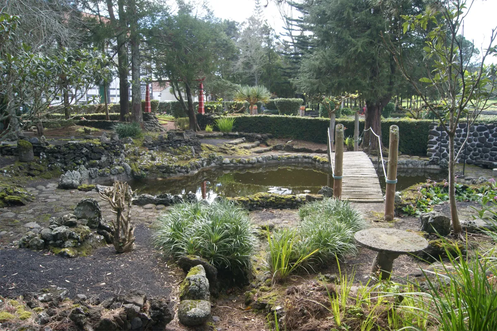
Parque Florestal Matos Souto
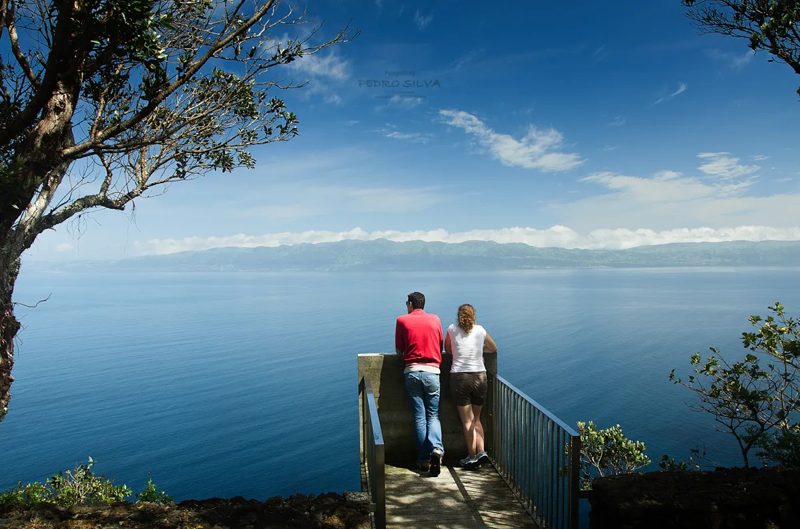
Miradouro da Terra Alta
El mirador de Terra Alta és també
el punt d'inici de la ruta de senderisme PR07 - Caminho das Voltas,
un camí de 6 km que descendeix fins al mar, passant per la
Baía das Canas, una platja de pedres preciosa (o millor dit,
relativament preciosa tirant a normaleta 🙃🙄) i arriba fins a Santo
Amaro. És altament probable que quan hi arribem ja sigui tard per fer aquesta
ruta, que a més a més, com que és lineal, requereix deixar primer un cotxe al punt
final.
Si no fem la caminada anterior, per anar acabant el dia, anirem a visitar la única
platja de sorra de tota l'illa (a on, si el temps i el mar acompanyen, ens podrem
banyar). Es tracta de la
Praia do Canto da
Areia, que per cert, tenim tocar del nostre allotjament.
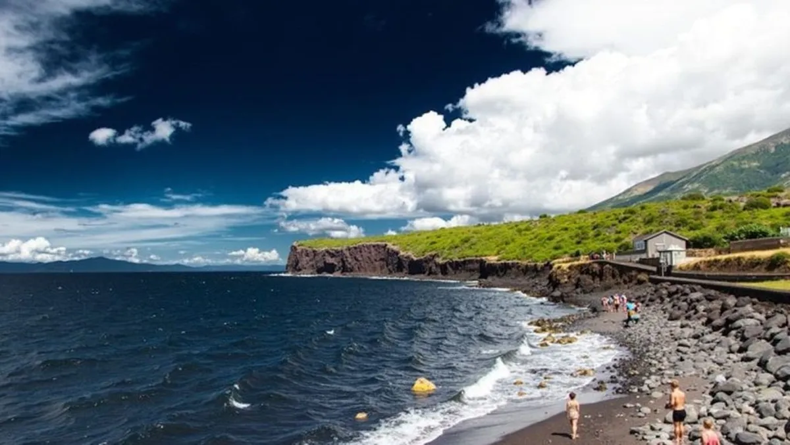
Baía das Canas
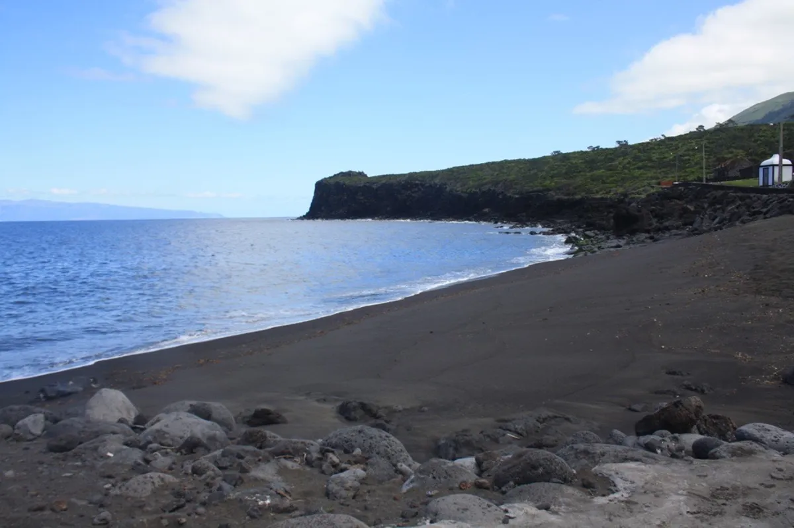
Praia do Canto da Areia
Finalment soparem a la zona de l'allotjament, a Prainha (no és que hi
hagi una gran oferta, així que algunes opcions que es mostren estan a uns pocs
quilòmetres cap al sud).
Restaurants a Prainha (i voltants)
Mapa de l'itinerari proposat
1
9:00
🐬 Avistament de cetacis ⭐
2
12:30
🍽️ Dinar a Lajes do Pico
3
14:30
🔭 Miradors de l'ER1
4
15:00
🏊 Poça das Mujas ⭐
5
17:00
🔦 Manhenha
6
17:45
🌲 Parque Florestal Matos Souto
7
18:15
🔭 Miradors del nord-est ⭐
Ribeirinha · Alto dos Cedros · Terra Alta · Chafariz de Santo Amaro
Hora aproximada de sortida de l'allotjament: 9:00h
Matí tranquil que recorrerem la zona nord fins a Madalena
abans d'agafar el ferri que ens permetrà saltar a l'illa de Faial.
Posarem rumb cap a l'oest tot resseguint la costa nord de Pico. Les primeres parades
seran als miradors de Prainha
i de São Miguel Arcanjo
que queden molt propers (el primer a 5,3 km de l'allotjament i el segon 3,7 km més
enllà).
Mirador de Prainha
Mirador São Miguel Arcanjo
Seguidament ens aturarem un moment a Ponta
Rasa (4 km més endavant), entre São Roque do Pico i Cais do Pico, per
fer-nos una foto amb el singular molí vermell que hi ha i a la
Furna de Santo António,
unes boniques piscines naturals molt freqüentades pels locals, però a on nosaltres no
ens hi entretindrem ja que trobarem llocs millors on banyar-nos més endavant. Des
d'aquí visitarem la Praia do
Guindaste a veure si l'aigua és de color turquesa com diuen…
Moinho da Ponta Rasa
Furna de Santo António
Seguirem 7 km més fins a la població de Santa Luzia per visitar els
seus arcs volcànics sobre el mar i, després d'un parell de quilòmetres
més, passarem per la Zona
balnear dos Arcos (tampoc aquí ens hi banyarem) fins arribar al poble
de Lajido, on
podem fer una visita llampec als seus carrers i admirar l'arquitectura tradicional
lligada al cultiu de les vinyes (cases de pedra de lava negra amb finestres i portes
de colors vius).
Zona balnear dos Arcos
Lajido
I ara sí, per fi, arribarem a la Zona
Balnear do Cachorro, just al costat de l'aeroport, i aquí sí que valdrà
la pena fer-hi una bona parada, tant per veure les curioses formacions de roca que
hi ha (a veure qui troba la que té forma de 🐶) com per les seves magnífiques piscines
naturals on, si fa bon temps, ens hi relaxarem una bona estona (aquest seria un lloc
ideal per fer snorkel, però segurament no tindrem l'opció ja que no trobarem
on llogar el material).
Piscina do Cachorro
Arcos do Cachorro 🐶
La següent parada serà el Cella
Bar, un bar-restaurant amb una arquitectura molt peculiar al que val la
pena fer-hi una visita ràpida abans d'anar a dinar al centre de
Madalena.
Restaurants a Madalena
Després de dinar, retornarem els cotxes de lloguer i esperarem el ferri que a les
15:15h ens ha de portar a la veïna illa de Faial en només 30 minuts
aproximadament.
Retorn dels cotxes a Pico
Data i hora retorn31-07-2026 · 14:30h
EmpresaOasis Rent a Car
AdreçaR. Dr. Freitas Pimentel nº7, Areia Funda, Madalena
Avís important
Aquesta travessia amb ferri és força curta i per una zona més o menys protegida, així
que no s'espera que sigui complicada. De tota manera, hi haurà Biodramina si
algú creu que li fa falta, i caldrà prendre-la una hora abans de la sortida, és a dir,
sobre les 14:15h.
Mapa de situació de tots els llocs d'interès (Pico)
Arribada a Horta
(capital de l'illa de Faial) amb ferri provinent de Madalena (Pico) a les 15:45h
aproximadament. Recollida dels cotxes de lloguer al mateix port d'Horta.
Lloguer de cotxes a Faial
Data i hora recollida31-07-2026 · 16:00h
EmpresaAutatlantis
AdreçaTerminal Marítimo de Passageiros do Porto da Horta
Passarem els dos propers dies a l'increïble i fantàstic allotjament
Refúgio, situat a la localitat de Feteira, a la
costa sud de l'illa i a només 6 km del centre d'Horta.
De compres
En algun moment del dia s'ha de trobar una estona per anar a comprar esmorzar pels dos
següents dies. Si ho trobem, també comprarem el dinar (tipus pícnic per emportar) per
l'endemà.
Abans d'encaminar-nos cap al nostre allotjament, farem una petita volta i visitarem
els miradors propers de
Nossa Senhora da Conceição
i de Monte Carneiro.
Mirador Nossa Senhora da Conceição
Mirador Monte Carneiro
A continuació, ens dirigirem cap al nostre allotjament per instal·lar-nos. Aquí tenim
dues opcions: una de relax total a la piscina de l'allotjament, i una altra una mica
més activa i amb bany final a la platja.
Passar la resta de la tarda a la piscina privada de l'allotjament.
Piscina del Refúgio
Fer la ruta PRC08 FAI — Entre
Montes ❇️ (3,3 km; 1h30), o simplement pujar al mirador del
Monte da Guia.
PRC08 FAI · Entre Montes
📏 3,3 km · ⏱ ~1h30 · ↑↓ 176m ·
Circular · Fàcil
Bany a la platja de Porto
Pim o a la d'Almoxarife.
Monte da Guia
Platja de Porto Pim
Cap al vespre, anar al centre d'Horta
per fer una breu passejada pel casc antic i pel passeig marítim, admirar els murals
que han deixat al llarg del temps diferents tripulacions que han passat per aquest
port esportiu (marina d'Horta) i visitar el Peter
Café Sport, punt de trobada dels mariners que creuen l'Atlàntic i on
la seva decoració reflecteix tots els llocs de procedència dels que hi han passat.
Horta
Marina d'Horta
Per acabar el dia, sopar a algun dels restaurants de la ciutat abans de tornar cap a
l'allotjament.
Mapa de situació de tots els llocs d'interès (Faial)
Dissabte 1 d'agost · Dia 11 de 12 · Faial
🌋 El millor de Faial
Caldeira do Faial · Capelinhos · Varadouro · Morro do Castelo Branco
🕗 Sortida ~8h📍 7 parades🥾 2 rutes opcionals🚗 Volta completa a l'illa · ~67 km🗺️ Veure ruta
Hora aproximada de sortida de l'allotjament: 8h
Dirigir-nos cap a la Caldeira do Faial
(16 km; 25 minuts) per visitar el mirador de la Caldeira do Cabeço Gordo.
Vista aèria de la Caldeira do Faial
Camí que rodeja el cràter
Des del propi mirador surt la ruta de senderisme
PRC04 FAI — Caldeira do Faial ❇️
(6,8 km; 2h30 amb parades). Aquesta ruta dona la volta al cràter del volcà i ofereix unes vistes
increïbles tan de l'interior del mateix com de l'oceà Atlàntic i les illes del voltant.
S'aconsella fer la ruta en sentit horari, és a dir començant cap a l'esquerra des del mirador.
⚠️
Aquesta ruta només té sentit si el dia està clar, sinó no val la pena
ja que no es veurà res. A més a més si hi ha molta humitat, el terreny
estarà enfangat i amb les vambes que portareu, només hi haurà perill de
patir una relliscada i caure al fons de la caldera del Pere Botero.
PRC04 FAI · Caldeira do Faial
📏 6,8 km · ⏱ ~2h30 · ↑↓ 400m ·
Moderada
📈 Perfil d'elevació (6,8 km · ↑↓ 400m)
⛔
Prohibit baixar al cràter
Per si algú té la mala idea… No es pot baixar a l'interior del volcà sense un permís
especial ni sense guia ja que és una zona d'especial protecció de la flora endèmica
que hi ha a l'interior!!
Tornar al cotxe per dirigir-nos al mirador Cabouco,
que és molt a prop (serà totalment prescindible si hem fet la ruta de senderisme) i
després preparem-nos per sentir rots perquè venen unes quantes corbes mentre enfilem
camí cap a la part nord de l'illa per arribar al cap de més de mitja hora (però només
11,2 km! — és una mitjana de poc més de 20 km/h???) al
mirador da Ribeira Funda i,
un parell o tres de quilòmetres després, al de
Ribeira das Cabras.
Mapa de la ruta de corbes
Mirador da Ribeira Funda
Mirador de Ribeira das Cabras
🔀
Si hem fet la ruta de la Caldeira do Faial
Probablement serà ja l'hora de dinar. Si portem dinar, ho podem fer a l'àrea de pícnic
que hi ha al propi mirador de Ribeira das Cabras o, si fa mal temps, a
Praia da Fajã. Si no portem el dinar, mirar el restaurant Rumar o, si volem
una cosa més ràpida i econòmica, el Snack-bar Pizzaria Fajã.
Seguidament ens dirigirem a la part més jove i espectacular de Faial; el
volcà de Capelinhos
(9 km; 10 minuts). Aquí passejarem per un paisatge que sembla la Lluna i visitarem el
Farol da Ponta dos Capelinhos
i el Porto do Comprido,
tots dos punts situats a la mateixa zona.
Volcà de Capelinhos
Porto do Comprido
🔀
Si no hem fet la ruta de la Caldeira do Faial
Segurament ja serà hora de començar a pensar amb el dinar. Si portem el dinar, ho podem
fer a la magnífica Reserva Florestal Natural do Parque do Capelo.
Si no portem dinar, mirar al Restaurant Bela Vista ⭐ a Capelo, o alguna opció
ràpida per la zona.
🔀
Si no hem fet la ruta de la Caldeira do Faial
Fer la ruta de senderisme Cabeço do Canto PRC01 FAI ❇️
(2,6 km; 2h) que té el seu inici a un quart d'hora (7 km) de la zona de Capelinhos.
PRC01 FAI · Cabeço do Canto
📏 2,6 km · ⏱ ~2h · ↑↓ 235m ·
Difícil
📈 Perfil d'elevació (2,6 km · ↑↓ 235m)
A continuació ens dirigirem al mirador de Varaduro Comprido
(6 km; 12 minuts) i a les piscines naturals Varadouro,
on potser ens vindrà de gust banyar-nos-hi i relaxar-nos una estona.
Per anar acabant el dia visitarem el Morro do Castelo Branco
des del seu mirador (9 km; 15 minuts).
⛔
Accés a peu totalment prohibit
Segur que aquí hi haurà algú amb ganes d'accedir caminant al "morro" però lamentablement
està totalment prohibit. En primer lloc, per raons de seguretat ja que el terreny és
inestable, alguns trams del camí són molt exposats amb una caiguda de gairebé 150m cap
al mar i habitualment hi fa força vent. En segon lloc, perquè és una àrea vital per la
nidació d'aus marítimes migratòries i està fortament protegit per garantir-ne la seva
tranquil·litat. I en tercer lloc, la Mons també estarà més tranquil·la… o no.
Piscines naturals de Varadouro
Mirador del Morro do Castelo Branco
Després podem anar a sopar al restaurant Petisca Aki ⭐ de la localitat de
Castelo Branco o al Campo dos Sabores, a Santa Catarina.
Per acabar de tancar la gran volta a l'illa que haurem fet, només ens queda recórrer
els 6 km (10 minuts) que ens separen del nostre allotjament.
Dirigir-nos cap a l'aeroport de Faial (4 km; 6 minuts) per retornar els cotxes de
lloguer i emprendre el viatge de tornada a casa. Farem com sempre, però ara amb més
raó que mai, tots ben separats dins l'avió 🤯, perquè segur que després de tants dies
junts, qui més qui menys agrairà una mica d'espai…
Durada del volCompanyiaNº VolNº Reserva2:30SATAS41156XV5ZHM
Aprofitar que tenim una llarga escala (3:50) per dinar tranquil·lament a l'aeroport de
Lisboa, mirar botigues i sobretot descansar. I va…, que si us heu portat bé, aquest
últim vol si que el farem tots ben juntets 🤗.